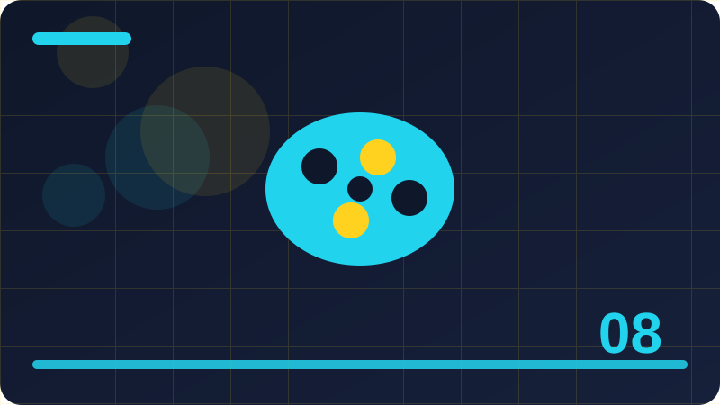

Chapter 8: Backgrounds: Colours, Images and Gradients

Section 1: What a Background Covers
What a Background Covers is an important part of learning CSS, and this section takes it one careful step at a time. In plain words, what a background covers describes a technique you will meet in real stylesheets, not just in a textbook example. Background images repeat by default, so controlling repeat, size and position is what turns a small picture into a deliberate pattern or a full hero image. When you first meet a new idea like this, it can feel abstract, because the property names are unfamiliar and a short rule can change a whole layout. The way through that feeling is to connect the idea to something concrete: a box you can see, a spacing change you can measure, or a small edit you can make and watch.
To understand what a background covers, start by asking a simple question: what problem does this idea solve, and what would be harder without it? Gradients are generated by the browser rather than downloaded, which makes them light, smooth and easy to adjust by changing a colour or a direction. When you look at a stylesheet that uses this idea, try to name the selector, the property and the value, because that three-part story works for almost every CSS rule. You do not have to master every edge case today. It is enough to recognise the idea when you see it, to use it in a short example, and to know where to look when it behaves unexpectedly.
Here is a short example to study, keeping what a background covers in mind as you read each declaration. The example is deliberately small, because a small example lets you follow every property without getting lost in extra details. Type the example yourself rather than pasting it, because typing forces you to notice each property name, colon and value. As you work through it, say what each line does in your own words, and check whether the result matches the story you told yourself about the rule.
Common mistakes with what a background covers usually come from guessing rather than measuring, so build a habit of checking the result in the browser before moving on. A fallback colour behind an image keeps a section readable while the image loads and also covers the case where the image cannot load at all. Keep your examples small while you practise, because a short stylesheet that you fully understand teaches more than a long one that only partly works. A second common mistake is copying a snippet without understanding which part does the work, which leaves you unable to adapt it when the layout changes.
In short, what a background covers is worth learning slowly, because it returns in almost every page you style. Test the result at a narrow width as well as a wide one, because a rule that looks perfect on a large screen can fail on a phone.
.banner {
background-image: url('pattern.png');
background-repeat: repeat;
background-color: #e2e8f0;
}Check: In your own words, explain What a Background Covers and give one small CSS example that shows it in use.
Section 2: Background Colour Basics
Background Colour Basics is an important part of learning CSS, and this section takes it one careful step at a time. In plain words, background colour basics describes a technique you will meet in real stylesheets, not just in a textbook example. Gradients are generated by the browser rather than downloaded, which makes them light, smooth and easy to adjust by changing a colour or a direction. When you first meet a new idea like this, it can feel abstract, because the property names are unfamiliar and a short rule can change a whole layout. The way through that feeling is to connect the idea to something concrete: a box you can see, a spacing change you can measure, or a small edit you can make and watch.
To understand background colour basics, start by asking a simple question: what problem does this idea solve, and what would be harder without it? Text placed over a picture or a gradient needs enough contrast, so a dark overlay or a careful colour choice is often part of the background decision, not an afterthought. When you look at a stylesheet that uses this idea, try to name the selector, the property and the value, because that three-part story works for almost every CSS rule. You do not have to master every edge case today. It is enough to recognise the idea when you see it, to use it in a short example, and to know where to look when it behaves unexpectedly.
Here is a short example to study, keeping background colour basics in mind as you read each declaration. The example is deliberately small, because a small example lets you follow every property without getting lost in extra details. Type the example yourself rather than pasting it, because typing forces you to notice each property name, colon and value. As you work through it, say what each line does in your own words, and check whether the result matches the story you told yourself about the rule. If it does not match, do not simply move on: that mismatch is the most useful moment in the whole exercise, because it points exactly to the part of your understanding that needs adjusting.
Common mistakes with background colour basics usually come from guessing rather than measuring, so build a habit of checking the result in the browser before moving on. Multiple backgrounds are listed with the first layer on top, and each layer can have its own size, position and repeat values. Name the class clearly for what the element is, rather than for how it looks today, so the stylesheet stays readable when the design changes later. A second common mistake is copying a snippet without understanding which part does the work, which leaves you unable to adapt it when the layout changes.
In short, background colour basics is worth learning slowly, because it returns in almost every page you style. Ask yourself what the page would look like without this rule, because removing a rule often reveals its job more clearly than adding another one.
.panel {
background: linear-gradient(135deg, #2563eb, #7c3aed);
}Check: In your own words, explain Background Colour Basics and give one small CSS example that shows it in use.
Section 3: Background Colour and Readability
Background Colour and Readability is an important part of learning CSS, and this section takes it one careful step at a time. In plain words, background colour and readability describes a technique you will meet in real stylesheets, not just in a textbook example. Text placed over a picture or a gradient needs enough contrast, so a dark overlay or a careful colour choice is often part of the background decision, not an afterthought. When you first meet a new idea like this, it can feel abstract, because the property names are unfamiliar and a short rule can change a whole layout. The way through that feeling is to connect the idea to something concrete: a box you can see, a spacing change you can measure, or a small edit you can make and watch.
To understand background colour and readability, start by asking a simple question: what problem does this idea solve, and what would be harder without it? A fallback colour behind an image keeps a section readable while the image loads and also covers the case where the image cannot load at all. When you look at a stylesheet that uses this idea, try to name the selector, the property and the value, because that three-part story works for almost every CSS rule. You do not have to master every edge case today. It is enough to recognise the idea when you see it, to use it in a short example, and to know where to look when it behaves unexpectedly.
Here is a short example to study, keeping background colour and readability in mind as you read each declaration. The example is deliberately small, because a small example lets you follow every property without getting lost in extra details. Type the example yourself rather than pasting it, because typing forces you to notice each property name, colon and value. As you work through it, say what each line does in your own words, and check whether the result matches the story you told yourself about the rule.
Common mistakes with background colour and readability usually come from guessing rather than measuring, so build a habit of checking the result in the browser before moving on. Background shorthand can set many of these values in one line, but it is easy to reset a value by accident, so explicit longhand properties are often clearer while learning. Test the result at a narrow width as well as a wide one, because a rule that looks perfect on a large screen can fail on a phone. A second common mistake is copying a snippet without understanding which part does the work, which leaves you unable to adapt it when the layout changes.
In short, background colour and readability is worth learning slowly, because it returns in almost every page you style. Check the result with a keyboard as well as a mouse when the element can receive focus, because visual order and focus order should agree.
.hero {
background-color: #0f172a;
background-image: linear-gradient(rgba(0, 0, 0, 0.5), rgba(0, 0, 0, 0.5));
background-size: cover;
background-position: center;
}Check: In your own words, explain Background Colour and Readability and give one small CSS example that shows it in use.
Section 4: Background Colour on the Body
Background Colour on the Body is an important part of learning CSS, and this section takes it one careful step at a time. In plain words, background colour on the body describes a technique you will meet in real stylesheets, not just in a textbook example. A fallback colour behind an image keeps a section readable while the image loads and also covers the case where the image cannot load at all. When you first meet a new idea like this, it can feel abstract, because the property names are unfamiliar and a short rule can change a whole layout. The way through that feeling is to connect the idea to something concrete: a box you can see, a spacing change you can measure, or a small edit you can make and watch.
To understand background colour on the body, start by asking a simple question: what problem does this idea solve, and what would be harder without it? Multiple backgrounds are listed with the first layer on top, and each layer can have its own size, position and repeat values. When you look at a stylesheet that uses this idea, try to name the selector, the property and the value, because that three-part story works for almost every CSS rule. You do not have to master every edge case today. It is enough to recognise the idea when you see it, to use it in a short example, and to know where to look when it behaves unexpectedly.
Here is a short example to study, keeping background colour on the body in mind as you read each declaration. The example is deliberately small, because a small example lets you follow every property without getting lost in extra details. Type the example yourself rather than pasting it, because typing forces you to notice each property name, colon and value. As you work through it, say what each line does in your own words, and check whether the result matches the story you told yourself about the rule.
Common mistakes with background colour on the body usually come from guessing rather than measuring, so build a habit of checking the result in the browser before moving on. Performance and accessibility both belong in background choices, because a huge image slows a page and a busy picture can hide the words on top of it. Ask yourself what the page would look like without this rule, because removing a rule often reveals its job more clearly than adding another one. A second common mistake is copying a snippet without understanding which part does the work, which leaves you unable to adapt it when the layout changes.
In short, background colour on the body is worth learning slowly, because it returns in almost every page you style. Keep a note of values that work well for your project, such as spacing steps and radii, so later pages stay consistent without guesswork.
.banner {
background-image: url('pattern.png');
background-repeat: repeat;
background-color: #e2e8f0;
}Check: In your own words, explain Background Colour on the Body and give one small CSS example that shows it in use.
Section 5: Background Colour on Sections
Background Colour on Sections is an important part of learning CSS, and this section takes it one careful step at a time. In plain words, background colour on sections describes a technique you will meet in real stylesheets, not just in a textbook example. Multiple backgrounds are listed with the first layer on top, and each layer can have its own size, position and repeat values. When you first meet a new idea like this, it can feel abstract, because the property names are unfamiliar and a short rule can change a whole layout. The way through that feeling is to connect the idea to something concrete: a box you can see, a spacing change you can measure, or a small edit you can make and watch.
To understand background colour on sections, start by asking a simple question: what problem does this idea solve, and what would be harder without it? Background shorthand can set many of these values in one line, but it is easy to reset a value by accident, so explicit longhand properties are often clearer while learning. When you look at a stylesheet that uses this idea, try to name the selector, the property and the value, because that three-part story works for almost every CSS rule. You do not have to master every edge case today. It is enough to recognise the idea when you see it, to use it in a short example, and to know where to look when it behaves unexpectedly.
Here is a short example to study, keeping background colour on sections in mind as you read each declaration. The example is deliberately small, because a small example lets you follow every property without getting lost in extra details. Type the example yourself rather than pasting it, because typing forces you to notice each property name, colon and value. As you work through it, say what each line does in your own words, and check whether the result matches the story you told yourself about the rule.
Common mistakes with background colour on sections usually come from guessing rather than measuring, so build a habit of checking the result in the browser before moving on. A background sits behind the content of a box, and it can be a flat colour, a picture, a gradient, or several layers stacked on top of each other. Check the result with a keyboard as well as a mouse when the element can receive focus, because visual order and focus order should agree. A second common mistake is copying a snippet without understanding which part does the work, which leaves you unable to adapt it when the layout changes.
In short, background colour on sections is worth learning slowly, because it returns in almost every page you style. Try the idea on a small test page before you use it in a larger layout, because a tiny example makes cause and effect easy to see.
.panel {
background: linear-gradient(135deg, #2563eb, #7c3aed);
}Check: In your own words, explain Background Colour on Sections and give one small CSS example that shows it in use.
Section 6: Background Images: Adding a Picture
Background Images: Adding a Picture is an important part of learning CSS, and this section takes it one careful step at a time. In plain words, background images: adding a picture describes a technique you will meet in real stylesheets, not just in a textbook example. Background shorthand can set many of these values in one line, but it is easy to reset a value by accident, so explicit longhand properties are often clearer while learning. When you first meet a new idea like this, it can feel abstract, because the property names are unfamiliar and a short rule can change a whole layout. The way through that feeling is to connect the idea to something concrete: a box you can see, a spacing change you can measure, or a small edit you can make and watch.
To understand background images: adding a picture, start by asking a simple question: what problem does this idea solve, and what would be harder without it? Performance and accessibility both belong in background choices, because a huge image slows a page and a busy picture can hide the words on top of it. When you look at a stylesheet that uses this idea, try to name the selector, the property and the value, because that three-part story works for almost every CSS rule. You do not have to master every edge case today. It is enough to recognise the idea when you see it, to use it in a short example, and to know where to look when it behaves unexpectedly.
Here is a short example to study, keeping background images: adding a picture in mind as you read each declaration. The example is deliberately small, because a small example lets you follow every property without getting lost in extra details. Type the example yourself rather than pasting it, because typing forces you to notice each property name, colon and value. As you work through it, say what each line does in your own words, and check whether the result matches the story you told yourself about the rule.
Common mistakes with background images: adding a picture usually come from guessing rather than measuring, so build a habit of checking the result in the browser before moving on. Background images repeat by default, so controlling repeat, size and position is what turns a small picture into a deliberate pattern or a full hero image. Keep a note of values that work well for your project, such as spacing steps and radii, so later pages stay consistent without guesswork. A second common mistake is copying a snippet without understanding which part does the work, which leaves you unable to adapt it when the layout changes.
In short, background images: adding a picture is worth learning slowly, because it returns in almost every page you style. Change one value at a time and reload the page, so you can be sure which change produced the result you are looking at.
.hero {
background-color: #0f172a;
background-image: linear-gradient(rgba(0, 0, 0, 0.5), rgba(0, 0, 0, 0.5));
background-size: cover;
background-position: center;
}Check: In your own words, explain Background Images: Adding a Picture and give one small CSS example that shows it in use.
Section 7: Background Repeat Patterns
Background Repeat Patterns is an important part of learning CSS, and this section takes it one careful step at a time. In plain words, background repeat patterns describes a technique you will meet in real stylesheets, not just in a textbook example. Performance and accessibility both belong in background choices, because a huge image slows a page and a busy picture can hide the words on top of it. When you first meet a new idea like this, it can feel abstract, because the property names are unfamiliar and a short rule can change a whole layout. The way through that feeling is to connect the idea to something concrete: a box you can see, a spacing change you can measure, or a small edit you can make and watch.
To understand background repeat patterns, start by asking a simple question: what problem does this idea solve, and what would be harder without it? A background sits behind the content of a box, and it can be a flat colour, a picture, a gradient, or several layers stacked on top of each other. When you look at a stylesheet that uses this idea, try to name the selector, the property and the value, because that three-part story works for almost every CSS rule. You do not have to master every edge case today. It is enough to recognise the idea when you see it, to use it in a short example, and to know where to look when it behaves unexpectedly.
Here is a short example to study, keeping background repeat patterns in mind as you read each declaration. The example is deliberately small, because a small example lets you follow every property without getting lost in extra details. Type the example yourself rather than pasting it, because typing forces you to notice each property name, colon and value. As you work through it, say what each line does in your own words, and check whether the result matches the story you told yourself about the rule.
Common mistakes with background repeat patterns usually come from guessing rather than measuring, so build a habit of checking the result in the browser before moving on. Gradients are generated by the browser rather than downloaded, which makes them light, smooth and easy to adjust by changing a colour or a direction. Try the idea on a small test page before you use it in a larger layout, because a tiny example makes cause and effect easy to see. A second common mistake is copying a snippet without understanding which part does the work, which leaves you unable to adapt it when the layout changes.
In short, background repeat patterns is worth learning slowly, because it returns in almost every page you style. Write down what you expected before you reload, and compare that prediction with what actually appears, because the difference points to the part to study next.
.banner {
background-image: url('pattern.png');
background-repeat: repeat;
background-color: #e2e8f0;
}Check: In your own words, explain Background Repeat Patterns and give one small CSS example that shows it in use.
Section 8: Background Repeat-X and Repeat-Y
Background Repeat-X and Repeat-Y is an important part of learning CSS, and this section takes it one careful step at a time. In plain words, background repeat-x and repeat-y describes a technique you will meet in real stylesheets, not just in a textbook example. A background sits behind the content of a box, and it can be a flat colour, a picture, a gradient, or several layers stacked on top of each other. When you first meet a new idea like this, it can feel abstract, because the property names are unfamiliar and a short rule can change a whole layout. The way through that feeling is to connect the idea to something concrete: a box you can see, a spacing change you can measure, or a small edit you can make and watch.
To understand background repeat-x and repeat-y, start by asking a simple question: what problem does this idea solve, and what would be harder without it? Background images repeat by default, so controlling repeat, size and position is what turns a small picture into a deliberate pattern or a full hero image. When you look at a stylesheet that uses this idea, try to name the selector, the property and the value, because that three-part story works for almost every CSS rule. You do not have to master every edge case today. It is enough to recognise the idea when you see it, to use it in a short example, and to know where to look when it behaves unexpectedly.
Here is a short example to study, keeping background repeat-x and repeat-y in mind as you read each declaration. The example is deliberately small, because a small example lets you follow every property without getting lost in extra details. Type the example yourself rather than pasting it, because typing forces you to notice each property name, colon and value. As you work through it, say what each line does in your own words, and check whether the result matches the story you told yourself about the rule.
Common mistakes with background repeat-x and repeat-y usually come from guessing rather than measuring, so build a habit of checking the result in the browser before moving on. Text placed over a picture or a gradient needs enough contrast, so a dark overlay or a careful colour choice is often part of the background decision, not an afterthought. Change one value at a time and reload the page, so you can be sure which change produced the result you are looking at. A second common mistake is copying a snippet without understanding which part does the work, which leaves you unable to adapt it when the layout changes.
In short, background repeat-x and repeat-y is worth learning slowly, because it returns in almost every page you style. If a result surprises you, inspect the element in the browser tools and read its computed styles, since the applied value is often different from the value you assumed.
.panel {
background: linear-gradient(135deg, #2563eb, #7c3aed);
}Check: In your own words, explain Background Repeat-X and Repeat-Y and give one small CSS example that shows it in use.
Section 9: Background No-Repeat for a Single Image
Background No-Repeat for a Single Image is an important part of learning CSS, and this section takes it one careful step at a time. In plain words, background no-repeat for a single image describes a technique you will meet in real stylesheets, not just in a textbook example. Background images repeat by default, so controlling repeat, size and position is what turns a small picture into a deliberate pattern or a full hero image. When you first meet a new idea like this, it can feel abstract, because the property names are unfamiliar and a short rule can change a whole layout. The way through that feeling is to connect the idea to something concrete: a box you can see, a spacing change you can measure, or a small edit you can make and watch.
To understand background no-repeat for a single image, start by asking a simple question: what problem does this idea solve, and what would be harder without it? Gradients are generated by the browser rather than downloaded, which makes them light, smooth and easy to adjust by changing a colour or a direction. When you look at a stylesheet that uses this idea, try to name the selector, the property and the value, because that three-part story works for almost every CSS rule. You do not have to master every edge case today. It is enough to recognise the idea when you see it, to use it in a short example, and to know where to look when it behaves unexpectedly.
Here is a short example to study, keeping background no-repeat for a single image in mind as you read each declaration. The example is deliberately small, because a small example lets you follow every property without getting lost in extra details. Type the example yourself rather than pasting it, because typing forces you to notice each property name, colon and value. As you work through it, say what each line does in your own words, and check whether the result matches the story you told yourself about the rule.
Common mistakes with background no-repeat for a single image usually come from guessing rather than measuring, so build a habit of checking the result in the browser before moving on. A fallback colour behind an image keeps a section readable while the image loads and also covers the case where the image cannot load at all. Write down what you expected before you reload, and compare that prediction with what actually appears, because the difference points to the part to study next. A second common mistake is copying a snippet without understanding which part does the work, which leaves you unable to adapt it when the layout changes.
In short, background no-repeat for a single image is worth learning slowly, because it returns in almost every page you style. Keep your examples small while you practise, because a short stylesheet that you fully understand teaches more than a long one that only partly works.
.hero {
background-color: #0f172a;
background-image: linear-gradient(rgba(0, 0, 0, 0.5), rgba(0, 0, 0, 0.5));
background-size: cover;
background-position: center;
}Check: In your own words, explain Background No-Repeat for a Single Image and give one small CSS example that shows it in use.
Section 10: Background Size: Cover Explained
Background Size: Cover Explained is an important part of learning CSS, and this section takes it one careful step at a time. In plain words, background size: cover explained describes a technique you will meet in real stylesheets, not just in a textbook example. Gradients are generated by the browser rather than downloaded, which makes them light, smooth and easy to adjust by changing a colour or a direction. When you first meet a new idea like this, it can feel abstract, because the property names are unfamiliar and a short rule can change a whole layout. The way through that feeling is to connect the idea to something concrete: a box you can see, a spacing change you can measure, or a small edit you can make and watch.
To understand background size: cover explained, start by asking a simple question: what problem does this idea solve, and what would be harder without it? Text placed over a picture or a gradient needs enough contrast, so a dark overlay or a careful colour choice is often part of the background decision, not an afterthought. When you look at a stylesheet that uses this idea, try to name the selector, the property and the value, because that three-part story works for almost every CSS rule. You do not have to master every edge case today. It is enough to recognise the idea when you see it, to use it in a short example, and to know where to look when it behaves unexpectedly.
Here is a short example to study, keeping background size: cover explained in mind as you read each declaration. The example is deliberately small, because a small example lets you follow every property without getting lost in extra details. Type the example yourself rather than pasting it, because typing forces you to notice each property name, colon and value. As you work through it, say what each line does in your own words, and check whether the result matches the story you told yourself about the rule.
Common mistakes with background size: cover explained usually come from guessing rather than measuring, so build a habit of checking the result in the browser before moving on. Multiple backgrounds are listed with the first layer on top, and each layer can have its own size, position and repeat values. If a result surprises you, inspect the element in the browser tools and read its computed styles, since the applied value is often different from the value you assumed. A second common mistake is copying a snippet without understanding which part does the work, which leaves you unable to adapt it when the layout changes.
In short, background size: cover explained is worth learning slowly, because it returns in almost every page you style. Name the class clearly for what the element is, rather than for how it looks today, so the stylesheet stays readable when the design changes later.
.banner {
background-image: url('pattern.png');
background-repeat: repeat;
background-color: #e2e8f0;
}Check: In your own words, explain Background Size: Cover Explained and give one small CSS example that shows it in use.
Section 11: Background Size: Contain Explained
Background Size: Contain Explained is an important part of learning CSS, and this section takes it one careful step at a time. In plain words, background size: contain explained describes a technique you will meet in real stylesheets, not just in a textbook example. Text placed over a picture or a gradient needs enough contrast, so a dark overlay or a careful colour choice is often part of the background decision, not an afterthought. When you first meet a new idea like this, it can feel abstract, because the property names are unfamiliar and a short rule can change a whole layout. The way through that feeling is to connect the idea to something concrete: a box you can see, a spacing change you can measure, or a small edit you can make and watch.
To understand background size: contain explained, start by asking a simple question: what problem does this idea solve, and what would be harder without it? A fallback colour behind an image keeps a section readable while the image loads and also covers the case where the image cannot load at all. When you look at a stylesheet that uses this idea, try to name the selector, the property and the value, because that three-part story works for almost every CSS rule. You do not have to master every edge case today. It is enough to recognise the idea when you see it, to use it in a short example, and to know where to look when it behaves unexpectedly.
Here is a short example to study, keeping background size: contain explained in mind as you read each declaration. The example is deliberately small, because a small example lets you follow every property without getting lost in extra details. Type the example yourself rather than pasting it, because typing forces you to notice each property name, colon and value. As you work through it, say what each line does in your own words, and check whether the result matches the story you told yourself about the rule.
Common mistakes with background size: contain explained usually come from guessing rather than measuring, so build a habit of checking the result in the browser before moving on. Background shorthand can set many of these values in one line, but it is easy to reset a value by accident, so explicit longhand properties are often clearer while learning. Keep your examples small while you practise, because a short stylesheet that you fully understand teaches more than a long one that only partly works. A second common mistake is copying a snippet without understanding which part does the work, which leaves you unable to adapt it when the layout changes.
In short, background size: contain explained is worth learning slowly, because it returns in almost every page you style. Test the result at a narrow width as well as a wide one, because a rule that looks perfect on a large screen can fail on a phone.
.panel {
background: linear-gradient(135deg, #2563eb, #7c3aed);
}Check: In your own words, explain Background Size: Contain Explained and give one small CSS example that shows it in use.
Section 12: Background Size with Fixed Values
Background Size with Fixed Values is an important part of learning CSS, and this section takes it one careful step at a time. In plain words, background size with fixed values describes a technique you will meet in real stylesheets, not just in a textbook example. A fallback colour behind an image keeps a section readable while the image loads and also covers the case where the image cannot load at all. When you first meet a new idea like this, it can feel abstract, because the property names are unfamiliar and a short rule can change a whole layout. The way through that feeling is to connect the idea to something concrete: a box you can see, a spacing change you can measure, or a small edit you can make and watch.
To understand background size with fixed values, start by asking a simple question: what problem does this idea solve, and what would be harder without it? Multiple backgrounds are listed with the first layer on top, and each layer can have its own size, position and repeat values. When you look at a stylesheet that uses this idea, try to name the selector, the property and the value, because that three-part story works for almost every CSS rule. You do not have to master every edge case today. It is enough to recognise the idea when you see it, to use it in a short example, and to know where to look when it behaves unexpectedly.
Here is a short example to study, keeping background size with fixed values in mind as you read each declaration. The example is deliberately small, because a small example lets you follow every property without getting lost in extra details. Type the example yourself rather than pasting it, because typing forces you to notice each property name, colon and value. As you work through it, say what each line does in your own words, and check whether the result matches the story you told yourself about the rule.
Common mistakes with background size with fixed values usually come from guessing rather than measuring, so build a habit of checking the result in the browser before moving on. Performance and accessibility both belong in background choices, because a huge image slows a page and a busy picture can hide the words on top of it. Name the class clearly for what the element is, rather than for how it looks today, so the stylesheet stays readable when the design changes later. A second common mistake is copying a snippet without understanding which part does the work, which leaves you unable to adapt it when the layout changes.
In short, background size with fixed values is worth learning slowly, because it returns in almost every page you style. Ask yourself what the page would look like without this rule, because removing a rule often reveals its job more clearly than adding another one.
.hero {
background-color: #0f172a;
background-image: linear-gradient(rgba(0, 0, 0, 0.5), rgba(0, 0, 0, 0.5));
background-size: cover;
background-position: center;
}Check: In your own words, explain Background Size with Fixed Values and give one small CSS example that shows it in use.
Section 13: Background Position Basics
Background Position Basics is an important part of learning CSS, and this section takes it one careful step at a time. In plain words, background position basics describes a technique you will meet in real stylesheets, not just in a textbook example. Multiple backgrounds are listed with the first layer on top, and each layer can have its own size, position and repeat values. When you first meet a new idea like this, it can feel abstract, because the property names are unfamiliar and a short rule can change a whole layout. The way through that feeling is to connect the idea to something concrete: a box you can see, a spacing change you can measure, or a small edit you can make and watch.
To understand background position basics, start by asking a simple question: what problem does this idea solve, and what would be harder without it? Background shorthand can set many of these values in one line, but it is easy to reset a value by accident, so explicit longhand properties are often clearer while learning. When you look at a stylesheet that uses this idea, try to name the selector, the property and the value, because that three-part story works for almost every CSS rule. You do not have to master every edge case today. It is enough to recognise the idea when you see it, to use it in a short example, and to know where to look when it behaves unexpectedly.
Here is a short example to study, keeping background position basics in mind as you read each declaration. The example is deliberately small, because a small example lets you follow every property without getting lost in extra details. Type the example yourself rather than pasting it, because typing forces you to notice each property name, colon and value. As you work through it, say what each line does in your own words, and check whether the result matches the story you told yourself about the rule.
Common mistakes with background position basics usually come from guessing rather than measuring, so build a habit of checking the result in the browser before moving on. A background sits behind the content of a box, and it can be a flat colour, a picture, a gradient, or several layers stacked on top of each other. Test the result at a narrow width as well as a wide one, because a rule that looks perfect on a large screen can fail on a phone. A second common mistake is copying a snippet without understanding which part does the work, which leaves you unable to adapt it when the layout changes.
In short, background position basics is worth learning slowly, because it returns in almost every page you style. Check the result with a keyboard as well as a mouse when the element can receive focus, because visual order and focus order should agree.
.banner {
background-image: url('pattern.png');
background-repeat: repeat;
background-color: #e2e8f0;
}Check: In your own words, explain Background Position Basics and give one small CSS example that shows it in use.
Section 14: Background Position Keywords
Background Position Keywords is an important part of learning CSS, and this section takes it one careful step at a time. In plain words, background position keywords describes a technique you will meet in real stylesheets, not just in a textbook example. Background shorthand can set many of these values in one line, but it is easy to reset a value by accident, so explicit longhand properties are often clearer while learning. When you first meet a new idea like this, it can feel abstract, because the property names are unfamiliar and a short rule can change a whole layout. The way through that feeling is to connect the idea to something concrete: a box you can see, a spacing change you can measure, or a small edit you can make and watch.
To understand background position keywords, start by asking a simple question: what problem does this idea solve, and what would be harder without it? Performance and accessibility both belong in background choices, because a huge image slows a page and a busy picture can hide the words on top of it. When you look at a stylesheet that uses this idea, try to name the selector, the property and the value, because that three-part story works for almost every CSS rule. You do not have to master every edge case today. It is enough to recognise the idea when you see it, to use it in a short example, and to know where to look when it behaves unexpectedly.
Here is a short example to study, keeping background position keywords in mind as you read each declaration. The example is deliberately small, because a small example lets you follow every property without getting lost in extra details. Type the example yourself rather than pasting it, because typing forces you to notice each property name, colon and value. As you work through it, say what each line does in your own words, and check whether the result matches the story you told yourself about the rule.
Common mistakes with background position keywords usually come from guessing rather than measuring, so build a habit of checking the result in the browser before moving on. Background images repeat by default, so controlling repeat, size and position is what turns a small picture into a deliberate pattern or a full hero image. Ask yourself what the page would look like without this rule, because removing a rule often reveals its job more clearly than adding another one. A second common mistake is copying a snippet without understanding which part does the work, which leaves you unable to adapt it when the layout changes.
In short, background position keywords is worth learning slowly, because it returns in almost every page you style. Keep a note of values that work well for your project, such as spacing steps and radii, so later pages stay consistent without guesswork.
.panel {
background: linear-gradient(135deg, #2563eb, #7c3aed);
}Check: In your own words, explain Background Position Keywords and give one small CSS example that shows it in use.
Section 15: Background Position Percentages
Background Position Percentages is an important part of learning CSS, and this section takes it one careful step at a time. In plain words, background position percentages describes a technique you will meet in real stylesheets, not just in a textbook example. Performance and accessibility both belong in background choices, because a huge image slows a page and a busy picture can hide the words on top of it. When you first meet a new idea like this, it can feel abstract, because the property names are unfamiliar and a short rule can change a whole layout. The way through that feeling is to connect the idea to something concrete: a box you can see, a spacing change you can measure, or a small edit you can make and watch.
To understand background position percentages, start by asking a simple question: what problem does this idea solve, and what would be harder without it? A background sits behind the content of a box, and it can be a flat colour, a picture, a gradient, or several layers stacked on top of each other. When you look at a stylesheet that uses this idea, try to name the selector, the property and the value, because that three-part story works for almost every CSS rule. You do not have to master every edge case today. It is enough to recognise the idea when you see it, to use it in a short example, and to know where to look when it behaves unexpectedly.
Here is a short example to study, keeping background position percentages in mind as you read each declaration. The example is deliberately small, because a small example lets you follow every property without getting lost in extra details. Type the example yourself rather than pasting it, because typing forces you to notice each property name, colon and value. As you work through it, say what each line does in your own words, and check whether the result matches the story you told yourself about the rule.
Common mistakes with background position percentages usually come from guessing rather than measuring, so build a habit of checking the result in the browser before moving on. Gradients are generated by the browser rather than downloaded, which makes them light, smooth and easy to adjust by changing a colour or a direction. Check the result with a keyboard as well as a mouse when the element can receive focus, because visual order and focus order should agree. A second common mistake is copying a snippet without understanding which part does the work, which leaves you unable to adapt it when the layout changes.
In short, background position percentages is worth learning slowly, because it returns in almost every page you style. Try the idea on a small test page before you use it in a larger layout, because a tiny example makes cause and effect easy to see.
.hero {
background-color: #0f172a;
background-image: linear-gradient(rgba(0, 0, 0, 0.5), rgba(0, 0, 0, 0.5));
background-size: cover;
background-position: center;
}Check: In your own words, explain Background Position Percentages and give one small CSS example that shows it in use.
Section 16: Background Attachment: Scroll
Background Attachment: Scroll is an important part of learning CSS, and this section takes it one careful step at a time. In plain words, background attachment: scroll describes a technique you will meet in real stylesheets, not just in a textbook example. A background sits behind the content of a box, and it can be a flat colour, a picture, a gradient, or several layers stacked on top of each other. When you first meet a new idea like this, it can feel abstract, because the property names are unfamiliar and a short rule can change a whole layout. The way through that feeling is to connect the idea to something concrete: a box you can see, a spacing change you can measure, or a small edit you can make and watch.
To understand background attachment: scroll, start by asking a simple question: what problem does this idea solve, and what would be harder without it? Background images repeat by default, so controlling repeat, size and position is what turns a small picture into a deliberate pattern or a full hero image. When you look at a stylesheet that uses this idea, try to name the selector, the property and the value, because that three-part story works for almost every CSS rule. You do not have to master every edge case today. It is enough to recognise the idea when you see it, to use it in a short example, and to know where to look when it behaves unexpectedly.
Here is a short example to study, keeping background attachment: scroll in mind as you read each declaration. The example is deliberately small, because a small example lets you follow every property without getting lost in extra details. Type the example yourself rather than pasting it, because typing forces you to notice each property name, colon and value. As you work through it, say what each line does in your own words, and check whether the result matches the story you told yourself about the rule.
Common mistakes with background attachment: scroll usually come from guessing rather than measuring, so build a habit of checking the result in the browser before moving on. Text placed over a picture or a gradient needs enough contrast, so a dark overlay or a careful colour choice is often part of the background decision, not an afterthought. Keep a note of values that work well for your project, such as spacing steps and radii, so later pages stay consistent without guesswork. A second common mistake is copying a snippet without understanding which part does the work, which leaves you unable to adapt it when the layout changes.
In short, background attachment: scroll is worth learning slowly, because it returns in almost every page you style. Change one value at a time and reload the page, so you can be sure which change produced the result you are looking at.
.banner {
background-image: url('pattern.png');
background-repeat: repeat;
background-color: #e2e8f0;
}Check: In your own words, explain Background Attachment: Scroll and give one small CSS example that shows it in use.
Section 17: Background Attachment: Fixed
Background Attachment: Fixed is an important part of learning CSS, and this section takes it one careful step at a time. In plain words, background attachment: fixed describes a technique you will meet in real stylesheets, not just in a textbook example. Background images repeat by default, so controlling repeat, size and position is what turns a small picture into a deliberate pattern or a full hero image. When you first meet a new idea like this, it can feel abstract, because the property names are unfamiliar and a short rule can change a whole layout. The way through that feeling is to connect the idea to something concrete: a box you can see, a spacing change you can measure, or a small edit you can make and watch.
To understand background attachment: fixed, start by asking a simple question: what problem does this idea solve, and what would be harder without it? Gradients are generated by the browser rather than downloaded, which makes them light, smooth and easy to adjust by changing a colour or a direction. When you look at a stylesheet that uses this idea, try to name the selector, the property and the value, because that three-part story works for almost every CSS rule. You do not have to master every edge case today. It is enough to recognise the idea when you see it, to use it in a short example, and to know where to look when it behaves unexpectedly.
Here is a short example to study, keeping background attachment: fixed in mind as you read each declaration. The example is deliberately small, because a small example lets you follow every property without getting lost in extra details. Type the example yourself rather than pasting it, because typing forces you to notice each property name, colon and value. As you work through it, say what each line does in your own words, and check whether the result matches the story you told yourself about the rule.
Common mistakes with background attachment: fixed usually come from guessing rather than measuring, so build a habit of checking the result in the browser before moving on. A fallback colour behind an image keeps a section readable while the image loads and also covers the case where the image cannot load at all. Try the idea on a small test page before you use it in a larger layout, because a tiny example makes cause and effect easy to see. A second common mistake is copying a snippet without understanding which part does the work, which leaves you unable to adapt it when the layout changes.
In short, background attachment: fixed is worth learning slowly, because it returns in almost every page you style. Write down what you expected before you reload, and compare that prediction with what actually appears, because the difference points to the part to study next.
.panel {
background: linear-gradient(135deg, #2563eb, #7c3aed);
}Check: In your own words, explain Background Attachment: Fixed and give one small CSS example that shows it in use.
Section 18: Background Origin: Border, Padding and Content
Background Origin: Border, Padding and Content is an important part of learning CSS, and this section takes it one careful step at a time. In plain words, background origin: border, padding and content describes a technique you will meet in real stylesheets, not just in a textbook example. Gradients are generated by the browser rather than downloaded, which makes them light, smooth and easy to adjust by changing a colour or a direction. When you first meet a new idea like this, it can feel abstract, because the property names are unfamiliar and a short rule can change a whole layout. The way through that feeling is to connect the idea to something concrete: a box you can see, a spacing change you can measure, or a small edit you can make and watch.
To understand background origin: border, padding and content, start by asking a simple question: what problem does this idea solve, and what would be harder without it? Text placed over a picture or a gradient needs enough contrast, so a dark overlay or a careful colour choice is often part of the background decision, not an afterthought. When you look at a stylesheet that uses this idea, try to name the selector, the property and the value, because that three-part story works for almost every CSS rule. You do not have to master every edge case today. It is enough to recognise the idea when you see it, to use it in a short example, and to know where to look when it behaves unexpectedly.
Here is a short example to study, keeping background origin: border, padding and content in mind as you read each declaration. The example is deliberately small, because a small example lets you follow every property without getting lost in extra details. Type the example yourself rather than pasting it, because typing forces you to notice each property name, colon and value. As you work through it, say what each line does in your own words, and check whether the result matches the story you told yourself about the rule.
Common mistakes with background origin: border, padding and content usually come from guessing rather than measuring, so build a habit of checking the result in the browser before moving on. Multiple backgrounds are listed with the first layer on top, and each layer can have its own size, position and repeat values. Change one value at a time and reload the page, so you can be sure which change produced the result you are looking at. A second common mistake is copying a snippet without understanding which part does the work, which leaves you unable to adapt it when the layout changes.
In short, background origin: border, padding and content is worth learning slowly, because it returns in almost every page you style. If a result surprises you, inspect the element in the browser tools and read its computed styles, since the applied value is often different from the value you assumed.
.hero {
background-color: #0f172a;
background-image: linear-gradient(rgba(0, 0, 0, 0.5), rgba(0, 0, 0, 0.5));
background-size: cover;
background-position: center;
}Check: In your own words, explain Background Origin: Border, Padding and Content and give one small CSS example that shows it in use.
Section 19: Background Clip: Where Colour Stops
Background Clip: Where Colour Stops is an important part of learning CSS, and this section takes it one careful step at a time. In plain words, background clip: where colour stops describes a technique you will meet in real stylesheets, not just in a textbook example. Text placed over a picture or a gradient needs enough contrast, so a dark overlay or a careful colour choice is often part of the background decision, not an afterthought. When you first meet a new idea like this, it can feel abstract, because the property names are unfamiliar and a short rule can change a whole layout. The way through that feeling is to connect the idea to something concrete: a box you can see, a spacing change you can measure, or a small edit you can make and watch.
To understand background clip: where colour stops, start by asking a simple question: what problem does this idea solve, and what would be harder without it? A fallback colour behind an image keeps a section readable while the image loads and also covers the case where the image cannot load at all. When you look at a stylesheet that uses this idea, try to name the selector, the property and the value, because that three-part story works for almost every CSS rule. You do not have to master every edge case today. It is enough to recognise the idea when you see it, to use it in a short example, and to know where to look when it behaves unexpectedly.
Here is a short example to study, keeping background clip: where colour stops in mind as you read each declaration. The example is deliberately small, because a small example lets you follow every property without getting lost in extra details. Type the example yourself rather than pasting it, because typing forces you to notice each property name, colon and value. As you work through it, say what each line does in your own words, and check whether the result matches the story you told yourself about the rule.
Common mistakes with background clip: where colour stops usually come from guessing rather than measuring, so build a habit of checking the result in the browser before moving on. Background shorthand can set many of these values in one line, but it is easy to reset a value by accident, so explicit longhand properties are often clearer while learning. Write down what you expected before you reload, and compare that prediction with what actually appears, because the difference points to the part to study next. A second common mistake is copying a snippet without understanding which part does the work, which leaves you unable to adapt it when the layout changes.
In short, background clip: where colour stops is worth learning slowly, because it returns in almost every page you style. Keep your examples small while you practise, because a short stylesheet that you fully understand teaches more than a long one that only partly works.
.banner {
background-image: url('pattern.png');
background-repeat: repeat;
background-color: #e2e8f0;
}Check: In your own words, explain Background Clip: Where Colour Stops and give one small CSS example that shows it in use.
Section 20: Multiple Background Layers
Multiple Background Layers is an important part of learning CSS, and this section takes it one careful step at a time. In plain words, multiple background layers describes a technique you will meet in real stylesheets, not just in a textbook example. A fallback colour behind an image keeps a section readable while the image loads and also covers the case where the image cannot load at all. When you first meet a new idea like this, it can feel abstract, because the property names are unfamiliar and a short rule can change a whole layout. The way through that feeling is to connect the idea to something concrete: a box you can see, a spacing change you can measure, or a small edit you can make and watch.
To understand multiple background layers, start by asking a simple question: what problem does this idea solve, and what would be harder without it? Multiple backgrounds are listed with the first layer on top, and each layer can have its own size, position and repeat values. When you look at a stylesheet that uses this idea, try to name the selector, the property and the value, because that three-part story works for almost every CSS rule. You do not have to master every edge case today. It is enough to recognise the idea when you see it, to use it in a short example, and to know where to look when it behaves unexpectedly.
Here is a short example to study, keeping multiple background layers in mind as you read each declaration. The example is deliberately small, because a small example lets you follow every property without getting lost in extra details. Type the example yourself rather than pasting it, because typing forces you to notice each property name, colon and value. As you work through it, say what each line does in your own words, and check whether the result matches the story you told yourself about the rule.
Common mistakes with multiple background layers usually come from guessing rather than measuring, so build a habit of checking the result in the browser before moving on. Performance and accessibility both belong in background choices, because a huge image slows a page and a busy picture can hide the words on top of it. If a result surprises you, inspect the element in the browser tools and read its computed styles, since the applied value is often different from the value you assumed. A second common mistake is copying a snippet without understanding which part does the work, which leaves you unable to adapt it when the layout changes.
In short, multiple background layers is worth learning slowly, because it returns in almost every page you style. Name the class clearly for what the element is, rather than for how it looks today, so the stylesheet stays readable when the design changes later.
.panel {
background: linear-gradient(135deg, #2563eb, #7c3aed);
}Check: In your own words, explain Multiple Background Layers and give one small CSS example that shows it in use.
Section 21: Layer Order: First on Top
Layer Order: First on Top is an important part of learning CSS, and this section takes it one careful step at a time. In plain words, layer order: first on top describes a technique you will meet in real stylesheets, not just in a textbook example. Multiple backgrounds are listed with the first layer on top, and each layer can have its own size, position and repeat values. When you first meet a new idea like this, it can feel abstract, because the property names are unfamiliar and a short rule can change a whole layout. The way through that feeling is to connect the idea to something concrete: a box you can see, a spacing change you can measure, or a small edit you can make and watch.
To understand layer order: first on top, start by asking a simple question: what problem does this idea solve, and what would be harder without it? Background shorthand can set many of these values in one line, but it is easy to reset a value by accident, so explicit longhand properties are often clearer while learning. When you look at a stylesheet that uses this idea, try to name the selector, the property and the value, because that three-part story works for almost every CSS rule. You do not have to master every edge case today. It is enough to recognise the idea when you see it, to use it in a short example, and to know where to look when it behaves unexpectedly.
Here is a short example to study, keeping layer order: first on top in mind as you read each declaration. The example is deliberately small, because a small example lets you follow every property without getting lost in extra details. Type the example yourself rather than pasting it, because typing forces you to notice each property name, colon and value. As you work through it, say what each line does in your own words, and check whether the result matches the story you told yourself about the rule.
Common mistakes with layer order: first on top usually come from guessing rather than measuring, so build a habit of checking the result in the browser before moving on. A background sits behind the content of a box, and it can be a flat colour, a picture, a gradient, or several layers stacked on top of each other. Keep your examples small while you practise, because a short stylesheet that you fully understand teaches more than a long one that only partly works. A second common mistake is copying a snippet without understanding which part does the work, which leaves you unable to adapt it when the layout changes.
In short, layer order: first on top is worth learning slowly, because it returns in almost every page you style. Test the result at a narrow width as well as a wide one, because a rule that looks perfect on a large screen can fail on a phone.
.hero {
background-color: #0f172a;
background-image: linear-gradient(rgba(0, 0, 0, 0.5), rgba(0, 0, 0, 0.5));
background-size: cover;
background-position: center;
}Check: In your own words, explain Layer Order: First on Top and give one small CSS example that shows it in use.
Section 22: Linear Gradients in Plain Words
Linear Gradients in Plain Words is an important part of learning CSS, and this section takes it one careful step at a time. In plain words, linear gradients in plain words describes a technique you will meet in real stylesheets, not just in a textbook example. Background shorthand can set many of these values in one line, but it is easy to reset a value by accident, so explicit longhand properties are often clearer while learning. When you first meet a new idea like this, it can feel abstract, because the property names are unfamiliar and a short rule can change a whole layout. The way through that feeling is to connect the idea to something concrete: a box you can see, a spacing change you can measure, or a small edit you can make and watch.
To understand linear gradients in plain words, start by asking a simple question: what problem does this idea solve, and what would be harder without it? Performance and accessibility both belong in background choices, because a huge image slows a page and a busy picture can hide the words on top of it. When you look at a stylesheet that uses this idea, try to name the selector, the property and the value, because that three-part story works for almost every CSS rule. You do not have to master every edge case today. It is enough to recognise the idea when you see it, to use it in a short example, and to know where to look when it behaves unexpectedly.
Here is a short example to study, keeping linear gradients in plain words in mind as you read each declaration. The example is deliberately small, because a small example lets you follow every property without getting lost in extra details. Type the example yourself rather than pasting it, because typing forces you to notice each property name, colon and value. As you work through it, say what each line does in your own words, and check whether the result matches the story you told yourself about the rule.
Common mistakes with linear gradients in plain words usually come from guessing rather than measuring, so build a habit of checking the result in the browser before moving on. Background images repeat by default, so controlling repeat, size and position is what turns a small picture into a deliberate pattern or a full hero image. Name the class clearly for what the element is, rather than for how it looks today, so the stylesheet stays readable when the design changes later. A second common mistake is copying a snippet without understanding which part does the work, which leaves you unable to adapt it when the layout changes.
In short, linear gradients in plain words is worth learning slowly, because it returns in almost every page you style. Ask yourself what the page would look like without this rule, because removing a rule often reveals its job more clearly than adding another one.
.banner {
background-image: url('pattern.png');
background-repeat: repeat;
background-color: #e2e8f0;
}Check: In your own words, explain Linear Gradients in Plain Words and give one small CSS example that shows it in use.
Section 23: Linear Gradient Direction
Linear Gradient Direction is an important part of learning CSS, and this section takes it one careful step at a time. In plain words, linear gradient direction describes a technique you will meet in real stylesheets, not just in a textbook example. Performance and accessibility both belong in background choices, because a huge image slows a page and a busy picture can hide the words on top of it. When you first meet a new idea like this, it can feel abstract, because the property names are unfamiliar and a short rule can change a whole layout. The way through that feeling is to connect the idea to something concrete: a box you can see, a spacing change you can measure, or a small edit you can make and watch.
To understand linear gradient direction, start by asking a simple question: what problem does this idea solve, and what would be harder without it? A background sits behind the content of a box, and it can be a flat colour, a picture, a gradient, or several layers stacked on top of each other. When you look at a stylesheet that uses this idea, try to name the selector, the property and the value, because that three-part story works for almost every CSS rule. You do not have to master every edge case today. It is enough to recognise the idea when you see it, to use it in a short example, and to know where to look when it behaves unexpectedly.
Here is a short example to study, keeping linear gradient direction in mind as you read each declaration. The example is deliberately small, because a small example lets you follow every property without getting lost in extra details. Type the example yourself rather than pasting it, because typing forces you to notice each property name, colon and value. As you work through it, say what each line does in your own words, and check whether the result matches the story you told yourself about the rule.
Common mistakes with linear gradient direction usually come from guessing rather than measuring, so build a habit of checking the result in the browser before moving on. Gradients are generated by the browser rather than downloaded, which makes them light, smooth and easy to adjust by changing a colour or a direction. Test the result at a narrow width as well as a wide one, because a rule that looks perfect on a large screen can fail on a phone. A second common mistake is copying a snippet without understanding which part does the work, which leaves you unable to adapt it when the layout changes.
In short, linear gradient direction is worth learning slowly, because it returns in almost every page you style. Check the result with a keyboard as well as a mouse when the element can receive focus, because visual order and focus order should agree.
.panel {
background: linear-gradient(135deg, #2563eb, #7c3aed);
}Check: In your own words, explain Linear Gradient Direction and give one small CSS example that shows it in use.
Section 24: Linear Gradient Colour Stops
Linear Gradient Colour Stops is an important part of learning CSS, and this section takes it one careful step at a time. In plain words, linear gradient colour stops describes a technique you will meet in real stylesheets, not just in a textbook example. A background sits behind the content of a box, and it can be a flat colour, a picture, a gradient, or several layers stacked on top of each other. When you first meet a new idea like this, it can feel abstract, because the property names are unfamiliar and a short rule can change a whole layout. The way through that feeling is to connect the idea to something concrete: a box you can see, a spacing change you can measure, or a small edit you can make and watch.
To understand linear gradient colour stops, start by asking a simple question: what problem does this idea solve, and what would be harder without it? Background images repeat by default, so controlling repeat, size and position is what turns a small picture into a deliberate pattern or a full hero image. When you look at a stylesheet that uses this idea, try to name the selector, the property and the value, because that three-part story works for almost every CSS rule. You do not have to master every edge case today. It is enough to recognise the idea when you see it, to use it in a short example, and to know where to look when it behaves unexpectedly.
Here is a short example to study, keeping linear gradient colour stops in mind as you read each declaration. The example is deliberately small, because a small example lets you follow every property without getting lost in extra details. Type the example yourself rather than pasting it, because typing forces you to notice each property name, colon and value. As you work through it, say what each line does in your own words, and check whether the result matches the story you told yourself about the rule.
Common mistakes with linear gradient colour stops usually come from guessing rather than measuring, so build a habit of checking the result in the browser before moving on. Text placed over a picture or a gradient needs enough contrast, so a dark overlay or a careful colour choice is often part of the background decision, not an afterthought. Ask yourself what the page would look like without this rule, because removing a rule often reveals its job more clearly than adding another one. A second common mistake is copying a snippet without understanding which part does the work, which leaves you unable to adapt it when the layout changes.
In short, linear gradient colour stops is worth learning slowly, because it returns in almost every page you style. Keep a note of values that work well for your project, such as spacing steps and radii, so later pages stay consistent without guesswork.
.hero {
background-color: #0f172a;
background-image: linear-gradient(rgba(0, 0, 0, 0.5), rgba(0, 0, 0, 0.5));
background-size: cover;
background-position: center;
}Check: In your own words, explain Linear Gradient Colour Stops and give one small CSS example that shows it in use.
Section 25: Hard Stops for Stripes
Hard Stops for Stripes is an important part of learning CSS, and this section takes it one careful step at a time. In plain words, hard stops for stripes describes a technique you will meet in real stylesheets, not just in a textbook example. Background images repeat by default, so controlling repeat, size and position is what turns a small picture into a deliberate pattern or a full hero image. When you first meet a new idea like this, it can feel abstract, because the property names are unfamiliar and a short rule can change a whole layout. The way through that feeling is to connect the idea to something concrete: a box you can see, a spacing change you can measure, or a small edit you can make and watch.
To understand hard stops for stripes, start by asking a simple question: what problem does this idea solve, and what would be harder without it? Gradients are generated by the browser rather than downloaded, which makes them light, smooth and easy to adjust by changing a colour or a direction. When you look at a stylesheet that uses this idea, try to name the selector, the property and the value, because that three-part story works for almost every CSS rule. You do not have to master every edge case today. It is enough to recognise the idea when you see it, to use it in a short example, and to know where to look when it behaves unexpectedly.
Here is a short example to study, keeping hard stops for stripes in mind as you read each declaration. The example is deliberately small, because a small example lets you follow every property without getting lost in extra details. Type the example yourself rather than pasting it, because typing forces you to notice each property name, colon and value. As you work through it, say what each line does in your own words, and check whether the result matches the story you told yourself about the rule.
Common mistakes with hard stops for stripes usually come from guessing rather than measuring, so build a habit of checking the result in the browser before moving on. A fallback colour behind an image keeps a section readable while the image loads and also covers the case where the image cannot load at all. Check the result with a keyboard as well as a mouse when the element can receive focus, because visual order and focus order should agree. A second common mistake is copying a snippet without understanding which part does the work, which leaves you unable to adapt it when the layout changes.
In short, hard stops for stripes is worth learning slowly, because it returns in almost every page you style. Try the idea on a small test page before you use it in a larger layout, because a tiny example makes cause and effect easy to see.
.banner {
background-image: url('pattern.png');
background-repeat: repeat;
background-color: #e2e8f0;
}Check: In your own words, explain Hard Stops for Stripes and give one small CSS example that shows it in use.
Section 26: Radial Gradients in Plain Words
Radial Gradients in Plain Words is an important part of learning CSS, and this section takes it one careful step at a time. In plain words, radial gradients in plain words describes a technique you will meet in real stylesheets, not just in a textbook example. Gradients are generated by the browser rather than downloaded, which makes them light, smooth and easy to adjust by changing a colour or a direction. When you first meet a new idea like this, it can feel abstract, because the property names are unfamiliar and a short rule can change a whole layout. The way through that feeling is to connect the idea to something concrete: a box you can see, a spacing change you can measure, or a small edit you can make and watch.
To understand radial gradients in plain words, start by asking a simple question: what problem does this idea solve, and what would be harder without it? Text placed over a picture or a gradient needs enough contrast, so a dark overlay or a careful colour choice is often part of the background decision, not an afterthought. When you look at a stylesheet that uses this idea, try to name the selector, the property and the value, because that three-part story works for almost every CSS rule. You do not have to master every edge case today. It is enough to recognise the idea when you see it, to use it in a short example, and to know where to look when it behaves unexpectedly.
Here is a short example to study, keeping radial gradients in plain words in mind as you read each declaration. The example is deliberately small, because a small example lets you follow every property without getting lost in extra details. Type the example yourself rather than pasting it, because typing forces you to notice each property name, colon and value. As you work through it, say what each line does in your own words, and check whether the result matches the story you told yourself about the rule.
Common mistakes with radial gradients in plain words usually come from guessing rather than measuring, so build a habit of checking the result in the browser before moving on. Multiple backgrounds are listed with the first layer on top, and each layer can have its own size, position and repeat values. Keep a note of values that work well for your project, such as spacing steps and radii, so later pages stay consistent without guesswork. A second common mistake is copying a snippet without understanding which part does the work, which leaves you unable to adapt it when the layout changes.
In short, radial gradients in plain words is worth learning slowly, because it returns in almost every page you style. Change one value at a time and reload the page, so you can be sure which change produced the result you are looking at.
.panel {
background: linear-gradient(135deg, #2563eb, #7c3aed);
}Check: In your own words, explain Radial Gradients in Plain Words and give one small CSS example that shows it in use.
Section 27: Radial Gradient Shapes and Sizes
Radial Gradient Shapes and Sizes is an important part of learning CSS, and this section takes it one careful step at a time. In plain words, radial gradient shapes and sizes describes a technique you will meet in real stylesheets, not just in a textbook example. Text placed over a picture or a gradient needs enough contrast, so a dark overlay or a careful colour choice is often part of the background decision, not an afterthought. When you first meet a new idea like this, it can feel abstract, because the property names are unfamiliar and a short rule can change a whole layout. The way through that feeling is to connect the idea to something concrete: a box you can see, a spacing change you can measure, or a small edit you can make and watch.
To understand radial gradient shapes and sizes, start by asking a simple question: what problem does this idea solve, and what would be harder without it? A fallback colour behind an image keeps a section readable while the image loads and also covers the case where the image cannot load at all. When you look at a stylesheet that uses this idea, try to name the selector, the property and the value, because that three-part story works for almost every CSS rule. You do not have to master every edge case today. It is enough to recognise the idea when you see it, to use it in a short example, and to know where to look when it behaves unexpectedly.
Here is a short example to study, keeping radial gradient shapes and sizes in mind as you read each declaration. The example is deliberately small, because a small example lets you follow every property without getting lost in extra details. Type the example yourself rather than pasting it, because typing forces you to notice each property name, colon and value. As you work through it, say what each line does in your own words, and check whether the result matches the story you told yourself about the rule.
Common mistakes with radial gradient shapes and sizes usually come from guessing rather than measuring, so build a habit of checking the result in the browser before moving on. Background shorthand can set many of these values in one line, but it is easy to reset a value by accident, so explicit longhand properties are often clearer while learning. Try the idea on a small test page before you use it in a larger layout, because a tiny example makes cause and effect easy to see. A second common mistake is copying a snippet without understanding which part does the work, which leaves you unable to adapt it when the layout changes.
In short, radial gradient shapes and sizes is worth learning slowly, because it returns in almost every page you style. Write down what you expected before you reload, and compare that prediction with what actually appears, because the difference points to the part to study next.
.hero {
background-color: #0f172a;
background-image: linear-gradient(rgba(0, 0, 0, 0.5), rgba(0, 0, 0, 0.5));
background-size: cover;
background-position: center;
}Check: In your own words, explain Radial Gradient Shapes and Sizes and give one small CSS example that shows it in use.
Section 28: Conic Gradients in Plain Words
Conic Gradients in Plain Words is an important part of learning CSS, and this section takes it one careful step at a time. In plain words, conic gradients in plain words describes a technique you will meet in real stylesheets, not just in a textbook example. A fallback colour behind an image keeps a section readable while the image loads and also covers the case where the image cannot load at all. When you first meet a new idea like this, it can feel abstract, because the property names are unfamiliar and a short rule can change a whole layout. The way through that feeling is to connect the idea to something concrete: a box you can see, a spacing change you can measure, or a small edit you can make and watch.
To understand conic gradients in plain words, start by asking a simple question: what problem does this idea solve, and what would be harder without it? Multiple backgrounds are listed with the first layer on top, and each layer can have its own size, position and repeat values. When you look at a stylesheet that uses this idea, try to name the selector, the property and the value, because that three-part story works for almost every CSS rule. You do not have to master every edge case today. It is enough to recognise the idea when you see it, to use it in a short example, and to know where to look when it behaves unexpectedly.
Here is a short example to study, keeping conic gradients in plain words in mind as you read each declaration. The example is deliberately small, because a small example lets you follow every property without getting lost in extra details. Type the example yourself rather than pasting it, because typing forces you to notice each property name, colon and value. As you work through it, say what each line does in your own words, and check whether the result matches the story you told yourself about the rule.
Common mistakes with conic gradients in plain words usually come from guessing rather than measuring, so build a habit of checking the result in the browser before moving on. Performance and accessibility both belong in background choices, because a huge image slows a page and a busy picture can hide the words on top of it. Change one value at a time and reload the page, so you can be sure which change produced the result you are looking at. A second common mistake is copying a snippet without understanding which part does the work, which leaves you unable to adapt it when the layout changes.
In short, conic gradients in plain words is worth learning slowly, because it returns in almost every page you style. If a result surprises you, inspect the element in the browser tools and read its computed styles, since the applied value is often different from the value you assumed.
.banner {
background-image: url('pattern.png');
background-repeat: repeat;
background-color: #e2e8f0;
}Check: In your own words, explain Conic Gradients in Plain Words and give one small CSS example that shows it in use.
Section 29: Gradient Text Effects
Gradient Text Effects is an important part of learning CSS, and this section takes it one careful step at a time. In plain words, gradient text effects describes a technique you will meet in real stylesheets, not just in a textbook example. Multiple backgrounds are listed with the first layer on top, and each layer can have its own size, position and repeat values. When you first meet a new idea like this, it can feel abstract, because the property names are unfamiliar and a short rule can change a whole layout. The way through that feeling is to connect the idea to something concrete: a box you can see, a spacing change you can measure, or a small edit you can make and watch.
To understand gradient text effects, start by asking a simple question: what problem does this idea solve, and what would be harder without it? Background shorthand can set many of these values in one line, but it is easy to reset a value by accident, so explicit longhand properties are often clearer while learning. When you look at a stylesheet that uses this idea, try to name the selector, the property and the value, because that three-part story works for almost every CSS rule. You do not have to master every edge case today. It is enough to recognise the idea when you see it, to use it in a short example, and to know where to look when it behaves unexpectedly.
Here is a short example to study, keeping gradient text effects in mind as you read each declaration. The example is deliberately small, because a small example lets you follow every property without getting lost in extra details. Type the example yourself rather than pasting it, because typing forces you to notice each property name, colon and value. As you work through it, say what each line does in your own words, and check whether the result matches the story you told yourself about the rule.
Common mistakes with gradient text effects usually come from guessing rather than measuring, so build a habit of checking the result in the browser before moving on. A background sits behind the content of a box, and it can be a flat colour, a picture, a gradient, or several layers stacked on top of each other. Write down what you expected before you reload, and compare that prediction with what actually appears, because the difference points to the part to study next. A second common mistake is copying a snippet without understanding which part does the work, which leaves you unable to adapt it when the layout changes.
In short, gradient text effects is worth learning slowly, because it returns in almost every page you style. Keep your examples small while you practise, because a short stylesheet that you fully understand teaches more than a long one that only partly works.
.panel {
background: linear-gradient(135deg, #2563eb, #7c3aed);
}Check: In your own words, explain Gradient Text Effects and give one small CSS example that shows it in use.
Section 30: Gradients as Decorative Bands
Gradients as Decorative Bands is an important part of learning CSS, and this section takes it one careful step at a time. In plain words, gradients as decorative bands describes a technique you will meet in real stylesheets, not just in a textbook example. Background shorthand can set many of these values in one line, but it is easy to reset a value by accident, so explicit longhand properties are often clearer while learning. When you first meet a new idea like this, it can feel abstract, because the property names are unfamiliar and a short rule can change a whole layout. The way through that feeling is to connect the idea to something concrete: a box you can see, a spacing change you can measure, or a small edit you can make and watch.
To understand gradients as decorative bands, start by asking a simple question: what problem does this idea solve, and what would be harder without it? Performance and accessibility both belong in background choices, because a huge image slows a page and a busy picture can hide the words on top of it. When you look at a stylesheet that uses this idea, try to name the selector, the property and the value, because that three-part story works for almost every CSS rule. You do not have to master every edge case today. It is enough to recognise the idea when you see it, to use it in a short example, and to know where to look when it behaves unexpectedly.
Here is a short example to study, keeping gradients as decorative bands in mind as you read each declaration. The example is deliberately small, because a small example lets you follow every property without getting lost in extra details. Type the example yourself rather than pasting it, because typing forces you to notice each property name, colon and value. As you work through it, say what each line does in your own words, and check whether the result matches the story you told yourself about the rule.
Common mistakes with gradients as decorative bands usually come from guessing rather than measuring, so build a habit of checking the result in the browser before moving on. Background images repeat by default, so controlling repeat, size and position is what turns a small picture into a deliberate pattern or a full hero image. If a result surprises you, inspect the element in the browser tools and read its computed styles, since the applied value is often different from the value you assumed. A second common mistake is copying a snippet without understanding which part does the work, which leaves you unable to adapt it when the layout changes.
In short, gradients as decorative bands is worth learning slowly, because it returns in almost every page you style. Name the class clearly for what the element is, rather than for how it looks today, so the stylesheet stays readable when the design changes later.
.hero {
background-color: #0f172a;
background-image: linear-gradient(rgba(0, 0, 0, 0.5), rgba(0, 0, 0, 0.5));
background-size: cover;
background-position: center;
}Check: In your own words, explain Gradients as Decorative Bands and give one small CSS example that shows it in use.
Section 31: Overlaying Colour on an Image
Overlaying Colour on an Image is an important part of learning CSS, and this section takes it one careful step at a time. In plain words, overlaying colour on an image describes a technique you will meet in real stylesheets, not just in a textbook example. Performance and accessibility both belong in background choices, because a huge image slows a page and a busy picture can hide the words on top of it. When you first meet a new idea like this, it can feel abstract, because the property names are unfamiliar and a short rule can change a whole layout. The way through that feeling is to connect the idea to something concrete: a box you can see, a spacing change you can measure, or a small edit you can make and watch.
To understand overlaying colour on an image, start by asking a simple question: what problem does this idea solve, and what would be harder without it? A background sits behind the content of a box, and it can be a flat colour, a picture, a gradient, or several layers stacked on top of each other. When you look at a stylesheet that uses this idea, try to name the selector, the property and the value, because that three-part story works for almost every CSS rule. You do not have to master every edge case today. It is enough to recognise the idea when you see it, to use it in a short example, and to know where to look when it behaves unexpectedly.
Here is a short example to study, keeping overlaying colour on an image in mind as you read each declaration. The example is deliberately small, because a small example lets you follow every property without getting lost in extra details. Type the example yourself rather than pasting it, because typing forces you to notice each property name, colon and value. As you work through it, say what each line does in your own words, and check whether the result matches the story you told yourself about the rule.
Common mistakes with overlaying colour on an image usually come from guessing rather than measuring, so build a habit of checking the result in the browser before moving on. Gradients are generated by the browser rather than downloaded, which makes them light, smooth and easy to adjust by changing a colour or a direction. Keep your examples small while you practise, because a short stylesheet that you fully understand teaches more than a long one that only partly works. A second common mistake is copying a snippet without understanding which part does the work, which leaves you unable to adapt it when the layout changes.
In short, overlaying colour on an image is worth learning slowly, because it returns in almost every page you style. Test the result at a narrow width as well as a wide one, because a rule that looks perfect on a large screen can fail on a phone.
.banner {
background-image: url('pattern.png');
background-repeat: repeat;
background-color: #e2e8f0;
}Check: In your own words, explain Overlaying Colour on an Image and give one small CSS example that shows it in use.
Section 32: Darkening an Image for Text
Darkening an Image for Text is an important part of learning CSS, and this section takes it one careful step at a time. In plain words, darkening an image for text describes a technique you will meet in real stylesheets, not just in a textbook example. A background sits behind the content of a box, and it can be a flat colour, a picture, a gradient, or several layers stacked on top of each other. When you first meet a new idea like this, it can feel abstract, because the property names are unfamiliar and a short rule can change a whole layout. The way through that feeling is to connect the idea to something concrete: a box you can see, a spacing change you can measure, or a small edit you can make and watch.
To understand darkening an image for text, start by asking a simple question: what problem does this idea solve, and what would be harder without it? Background images repeat by default, so controlling repeat, size and position is what turns a small picture into a deliberate pattern or a full hero image. When you look at a stylesheet that uses this idea, try to name the selector, the property and the value, because that three-part story works for almost every CSS rule. You do not have to master every edge case today. It is enough to recognise the idea when you see it, to use it in a short example, and to know where to look when it behaves unexpectedly.
Here is a short example to study, keeping darkening an image for text in mind as you read each declaration. The example is deliberately small, because a small example lets you follow every property without getting lost in extra details. Type the example yourself rather than pasting it, because typing forces you to notice each property name, colon and value. As you work through it, say what each line does in your own words, and check whether the result matches the story you told yourself about the rule.
Common mistakes with darkening an image for text usually come from guessing rather than measuring, so build a habit of checking the result in the browser before moving on. Text placed over a picture or a gradient needs enough contrast, so a dark overlay or a careful colour choice is often part of the background decision, not an afterthought. Name the class clearly for what the element is, rather than for how it looks today, so the stylesheet stays readable when the design changes later. A second common mistake is copying a snippet without understanding which part does the work, which leaves you unable to adapt it when the layout changes.
In short, darkening an image for text is worth learning slowly, because it returns in almost every page you style. Ask yourself what the page would look like without this rule, because removing a rule often reveals its job more clearly than adding another one.
.panel {
background: linear-gradient(135deg, #2563eb, #7c3aed);
}Check: In your own words, explain Darkening an Image for Text and give one small CSS example that shows it in use.
Section 33: Backgrounds and Image File Size
Backgrounds and Image File Size is an important part of learning CSS, and this section takes it one careful step at a time. In plain words, backgrounds and image file size describes a technique you will meet in real stylesheets, not just in a textbook example. Background images repeat by default, so controlling repeat, size and position is what turns a small picture into a deliberate pattern or a full hero image. When you first meet a new idea like this, it can feel abstract, because the property names are unfamiliar and a short rule can change a whole layout. The way through that feeling is to connect the idea to something concrete: a box you can see, a spacing change you can measure, or a small edit you can make and watch.
To understand backgrounds and image file size, start by asking a simple question: what problem does this idea solve, and what would be harder without it? Gradients are generated by the browser rather than downloaded, which makes them light, smooth and easy to adjust by changing a colour or a direction. When you look at a stylesheet that uses this idea, try to name the selector, the property and the value, because that three-part story works for almost every CSS rule. You do not have to master every edge case today. It is enough to recognise the idea when you see it, to use it in a short example, and to know where to look when it behaves unexpectedly.
Here is a short example to study, keeping backgrounds and image file size in mind as you read each declaration. The example is deliberately small, because a small example lets you follow every property without getting lost in extra details. Type the example yourself rather than pasting it, because typing forces you to notice each property name, colon and value. As you work through it, say what each line does in your own words, and check whether the result matches the story you told yourself about the rule.
Common mistakes with backgrounds and image file size usually come from guessing rather than measuring, so build a habit of checking the result in the browser before moving on. A fallback colour behind an image keeps a section readable while the image loads and also covers the case where the image cannot load at all. Test the result at a narrow width as well as a wide one, because a rule that looks perfect on a large screen can fail on a phone. A second common mistake is copying a snippet without understanding which part does the work, which leaves you unable to adapt it when the layout changes.
In short, backgrounds and image file size is worth learning slowly, because it returns in almost every page you style. Check the result with a keyboard as well as a mouse when the element can receive focus, because visual order and focus order should agree.
.hero {
background-color: #0f172a;
background-image: linear-gradient(rgba(0, 0, 0, 0.5), rgba(0, 0, 0, 0.5));
background-size: cover;
background-position: center;
}Check: In your own words, explain Backgrounds and Image File Size and give one small CSS example that shows it in use.
Section 34: Choosing Images That Tile Well
Choosing Images That Tile Well is an important part of learning CSS, and this section takes it one careful step at a time. In plain words, choosing images that tile well describes a technique you will meet in real stylesheets, not just in a textbook example. Gradients are generated by the browser rather than downloaded, which makes them light, smooth and easy to adjust by changing a colour or a direction. When you first meet a new idea like this, it can feel abstract, because the property names are unfamiliar and a short rule can change a whole layout. The way through that feeling is to connect the idea to something concrete: a box you can see, a spacing change you can measure, or a small edit you can make and watch.
To understand choosing images that tile well, start by asking a simple question: what problem does this idea solve, and what would be harder without it? Text placed over a picture or a gradient needs enough contrast, so a dark overlay or a careful colour choice is often part of the background decision, not an afterthought. When you look at a stylesheet that uses this idea, try to name the selector, the property and the value, because that three-part story works for almost every CSS rule. You do not have to master every edge case today. It is enough to recognise the idea when you see it, to use it in a short example, and to know where to look when it behaves unexpectedly.
Here is a short example to study, keeping choosing images that tile well in mind as you read each declaration. The example is deliberately small, because a small example lets you follow every property without getting lost in extra details. Type the example yourself rather than pasting it, because typing forces you to notice each property name, colon and value. As you work through it, say what each line does in your own words, and check whether the result matches the story you told yourself about the rule.
Common mistakes with choosing images that tile well usually come from guessing rather than measuring, so build a habit of checking the result in the browser before moving on. Multiple backgrounds are listed with the first layer on top, and each layer can have its own size, position and repeat values. Ask yourself what the page would look like without this rule, because removing a rule often reveals its job more clearly than adding another one. A second common mistake is copying a snippet without understanding which part does the work, which leaves you unable to adapt it when the layout changes.
In short, choosing images that tile well is worth learning slowly, because it returns in almost every page you style. Keep a note of values that work well for your project, such as spacing steps and radii, so later pages stay consistent without guesswork.
.banner {
background-image: url('pattern.png');
background-repeat: repeat;
background-color: #e2e8f0;
}Check: In your own words, explain Choosing Images That Tile Well and give one small CSS example that shows it in use.
Section 35: Backgrounds on Buttons and Cards
Backgrounds on Buttons and Cards is an important part of learning CSS, and this section takes it one careful step at a time. In plain words, backgrounds on buttons and cards describes a technique you will meet in real stylesheets, not just in a textbook example. Text placed over a picture or a gradient needs enough contrast, so a dark overlay or a careful colour choice is often part of the background decision, not an afterthought. When you first meet a new idea like this, it can feel abstract, because the property names are unfamiliar and a short rule can change a whole layout. The way through that feeling is to connect the idea to something concrete: a box you can see, a spacing change you can measure, or a small edit you can make and watch.
To understand backgrounds on buttons and cards, start by asking a simple question: what problem does this idea solve, and what would be harder without it? A fallback colour behind an image keeps a section readable while the image loads and also covers the case where the image cannot load at all. When you look at a stylesheet that uses this idea, try to name the selector, the property and the value, because that three-part story works for almost every CSS rule. You do not have to master every edge case today. It is enough to recognise the idea when you see it, to use it in a short example, and to know where to look when it behaves unexpectedly.
Here is a short example to study, keeping backgrounds on buttons and cards in mind as you read each declaration. The example is deliberately small, because a small example lets you follow every property without getting lost in extra details. Type the example yourself rather than pasting it, because typing forces you to notice each property name, colon and value. As you work through it, say what each line does in your own words, and check whether the result matches the story you told yourself about the rule.
Common mistakes with backgrounds on buttons and cards usually come from guessing rather than measuring, so build a habit of checking the result in the browser before moving on. Background shorthand can set many of these values in one line, but it is easy to reset a value by accident, so explicit longhand properties are often clearer while learning. Check the result with a keyboard as well as a mouse when the element can receive focus, because visual order and focus order should agree. A second common mistake is copying a snippet without understanding which part does the work, which leaves you unable to adapt it when the layout changes.
In short, backgrounds on buttons and cards is worth learning slowly, because it returns in almost every page you style. Try the idea on a small test page before you use it in a larger layout, because a tiny example makes cause and effect easy to see.
.panel {
background: linear-gradient(135deg, #2563eb, #7c3aed);
}Check: In your own words, explain Backgrounds on Buttons and Cards and give one small CSS example that shows it in use.
Section 36: Hero Backgrounds That Stay Readable
Hero Backgrounds That Stay Readable is an important part of learning CSS, and this section takes it one careful step at a time. In plain words, hero backgrounds that stay readable describes a technique you will meet in real stylesheets, not just in a textbook example. A fallback colour behind an image keeps a section readable while the image loads and also covers the case where the image cannot load at all. When you first meet a new idea like this, it can feel abstract, because the property names are unfamiliar and a short rule can change a whole layout. The way through that feeling is to connect the idea to something concrete: a box you can see, a spacing change you can measure, or a small edit you can make and watch.
To understand hero backgrounds that stay readable, start by asking a simple question: what problem does this idea solve, and what would be harder without it? Multiple backgrounds are listed with the first layer on top, and each layer can have its own size, position and repeat values. When you look at a stylesheet that uses this idea, try to name the selector, the property and the value, because that three-part story works for almost every CSS rule. You do not have to master every edge case today. It is enough to recognise the idea when you see it, to use it in a short example, and to know where to look when it behaves unexpectedly.
Here is a short example to study, keeping hero backgrounds that stay readable in mind as you read each declaration. The example is deliberately small, because a small example lets you follow every property without getting lost in extra details. Type the example yourself rather than pasting it, because typing forces you to notice each property name, colon and value. As you work through it, say what each line does in your own words, and check whether the result matches the story you told yourself about the rule.
Common mistakes with hero backgrounds that stay readable usually come from guessing rather than measuring, so build a habit of checking the result in the browser before moving on. Performance and accessibility both belong in background choices, because a huge image slows a page and a busy picture can hide the words on top of it. Keep a note of values that work well for your project, such as spacing steps and radii, so later pages stay consistent without guesswork. A second common mistake is copying a snippet without understanding which part does the work, which leaves you unable to adapt it when the layout changes.
In short, hero backgrounds that stay readable is worth learning slowly, because it returns in almost every page you style. Change one value at a time and reload the page, so you can be sure which change produced the result you are looking at.
.hero {
background-color: #0f172a;
background-image: linear-gradient(rgba(0, 0, 0, 0.5), rgba(0, 0, 0, 0.5));
background-size: cover;
background-position: center;
}Check: In your own words, explain Hero Backgrounds That Stay Readable and give one small CSS example that shows it in use.
Section 37: Pattern Backgrounds with Gradients
Pattern Backgrounds with Gradients is an important part of learning CSS, and this section takes it one careful step at a time. In plain words, pattern backgrounds with gradients describes a technique you will meet in real stylesheets, not just in a textbook example. Multiple backgrounds are listed with the first layer on top, and each layer can have its own size, position and repeat values. When you first meet a new idea like this, it can feel abstract, because the property names are unfamiliar and a short rule can change a whole layout. The way through that feeling is to connect the idea to something concrete: a box you can see, a spacing change you can measure, or a small edit you can make and watch.
To understand pattern backgrounds with gradients, start by asking a simple question: what problem does this idea solve, and what would be harder without it? Background shorthand can set many of these values in one line, but it is easy to reset a value by accident, so explicit longhand properties are often clearer while learning. When you look at a stylesheet that uses this idea, try to name the selector, the property and the value, because that three-part story works for almost every CSS rule. You do not have to master every edge case today. It is enough to recognise the idea when you see it, to use it in a short example, and to know where to look when it behaves unexpectedly.
Here is a short example to study, keeping pattern backgrounds with gradients in mind as you read each declaration. The example is deliberately small, because a small example lets you follow every property without getting lost in extra details. Type the example yourself rather than pasting it, because typing forces you to notice each property name, colon and value. As you work through it, say what each line does in your own words, and check whether the result matches the story you told yourself about the rule.
Common mistakes with pattern backgrounds with gradients usually come from guessing rather than measuring, so build a habit of checking the result in the browser before moving on. A background sits behind the content of a box, and it can be a flat colour, a picture, a gradient, or several layers stacked on top of each other. Try the idea on a small test page before you use it in a larger layout, because a tiny example makes cause and effect easy to see. A second common mistake is copying a snippet without understanding which part does the work, which leaves you unable to adapt it when the layout changes.
In short, pattern backgrounds with gradients is worth learning slowly, because it returns in almost every page you style. Write down what you expected before you reload, and compare that prediction with what actually appears, because the difference points to the part to study next.
.banner {
background-image: url('pattern.png');
background-repeat: repeat;
background-color: #e2e8f0;
}Check: In your own words, explain Pattern Backgrounds with Gradients and give one small CSS example that shows it in use.
Section 38: Background Shorthand in One Line
Background Shorthand in One Line is an important part of learning CSS, and this section takes it one careful step at a time. In plain words, background shorthand in one line describes a technique you will meet in real stylesheets, not just in a textbook example. Background shorthand can set many of these values in one line, but it is easy to reset a value by accident, so explicit longhand properties are often clearer while learning. When you first meet a new idea like this, it can feel abstract, because the property names are unfamiliar and a short rule can change a whole layout. The way through that feeling is to connect the idea to something concrete: a box you can see, a spacing change you can measure, or a small edit you can make and watch.
To understand background shorthand in one line, start by asking a simple question: what problem does this idea solve, and what would be harder without it? Performance and accessibility both belong in background choices, because a huge image slows a page and a busy picture can hide the words on top of it. When you look at a stylesheet that uses this idea, try to name the selector, the property and the value, because that three-part story works for almost every CSS rule. You do not have to master every edge case today. It is enough to recognise the idea when you see it, to use it in a short example, and to know where to look when it behaves unexpectedly.
Here is a short example to study, keeping background shorthand in one line in mind as you read each declaration. The example is deliberately small, because a small example lets you follow every property without getting lost in extra details. Type the example yourself rather than pasting it, because typing forces you to notice each property name, colon and value. As you work through it, say what each line does in your own words, and check whether the result matches the story you told yourself about the rule.
Common mistakes with background shorthand in one line usually come from guessing rather than measuring, so build a habit of checking the result in the browser before moving on. Background images repeat by default, so controlling repeat, size and position is what turns a small picture into a deliberate pattern or a full hero image. Change one value at a time and reload the page, so you can be sure which change produced the result you are looking at. A second common mistake is copying a snippet without understanding which part does the work, which leaves you unable to adapt it when the layout changes.
In short, background shorthand in one line is worth learning slowly, because it returns in almost every page you style. If a result surprises you, inspect the element in the browser tools and read its computed styles, since the applied value is often different from the value you assumed.
.panel {
background: linear-gradient(135deg, #2563eb, #7c3aed);
}Check: In your own words, explain Background Shorthand in One Line and give one small CSS example that shows it in use.
Section 39: Fallback Colour Behind an Image
Fallback Colour Behind an Image is an important part of learning CSS, and this section takes it one careful step at a time. In plain words, fallback colour behind an image describes a technique you will meet in real stylesheets, not just in a textbook example. Performance and accessibility both belong in background choices, because a huge image slows a page and a busy picture can hide the words on top of it. When you first meet a new idea like this, it can feel abstract, because the property names are unfamiliar and a short rule can change a whole layout. The way through that feeling is to connect the idea to something concrete: a box you can see, a spacing change you can measure, or a small edit you can make and watch.
To understand fallback colour behind an image, start by asking a simple question: what problem does this idea solve, and what would be harder without it? A background sits behind the content of a box, and it can be a flat colour, a picture, a gradient, or several layers stacked on top of each other. When you look at a stylesheet that uses this idea, try to name the selector, the property and the value, because that three-part story works for almost every CSS rule. You do not have to master every edge case today. It is enough to recognise the idea when you see it, to use it in a short example, and to know where to look when it behaves unexpectedly.
Here is a short example to study, keeping fallback colour behind an image in mind as you read each declaration. The example is deliberately small, because a small example lets you follow every property without getting lost in extra details. Type the example yourself rather than pasting it, because typing forces you to notice each property name, colon and value. As you work through it, say what each line does in your own words, and check whether the result matches the story you told yourself about the rule.
Common mistakes with fallback colour behind an image usually come from guessing rather than measuring, so build a habit of checking the result in the browser before moving on. Gradients are generated by the browser rather than downloaded, which makes them light, smooth and easy to adjust by changing a colour or a direction. Write down what you expected before you reload, and compare that prediction with what actually appears, because the difference points to the part to study next. A second common mistake is copying a snippet without understanding which part does the work, which leaves you unable to adapt it when the layout changes.
In short, fallback colour behind an image is worth learning slowly, because it returns in almost every page you style. Keep your examples small while you practise, because a short stylesheet that you fully understand teaches more than a long one that only partly works.
.hero {
background-color: #0f172a;
background-image: linear-gradient(rgba(0, 0, 0, 0.5), rgba(0, 0, 0, 0.5));
background-size: cover;
background-position: center;
}Check: In your own words, explain Fallback Colour Behind an Image and give one small CSS example that shows it in use.
Section 40: Backgrounds That Fail Gracefully
Backgrounds That Fail Gracefully is an important part of learning CSS, and this section takes it one careful step at a time. In plain words, backgrounds that fail gracefully describes a technique you will meet in real stylesheets, not just in a textbook example. A background sits behind the content of a box, and it can be a flat colour, a picture, a gradient, or several layers stacked on top of each other. When you first meet a new idea like this, it can feel abstract, because the property names are unfamiliar and a short rule can change a whole layout. The way through that feeling is to connect the idea to something concrete: a box you can see, a spacing change you can measure, or a small edit you can make and watch.
To understand backgrounds that fail gracefully, start by asking a simple question: what problem does this idea solve, and what would be harder without it? Background images repeat by default, so controlling repeat, size and position is what turns a small picture into a deliberate pattern or a full hero image. When you look at a stylesheet that uses this idea, try to name the selector, the property and the value, because that three-part story works for almost every CSS rule. You do not have to master every edge case today. It is enough to recognise the idea when you see it, to use it in a short example, and to know where to look when it behaves unexpectedly.
Here is a short example to study, keeping backgrounds that fail gracefully in mind as you read each declaration. The example is deliberately small, because a small example lets you follow every property without getting lost in extra details. Type the example yourself rather than pasting it, because typing forces you to notice each property name, colon and value. As you work through it, say what each line does in your own words, and check whether the result matches the story you told yourself about the rule.
Common mistakes with backgrounds that fail gracefully usually come from guessing rather than measuring, so build a habit of checking the result in the browser before moving on. Text placed over a picture or a gradient needs enough contrast, so a dark overlay or a careful colour choice is often part of the background decision, not an afterthought. If a result surprises you, inspect the element in the browser tools and read its computed styles, since the applied value is often different from the value you assumed. A second common mistake is copying a snippet without understanding which part does the work, which leaves you unable to adapt it when the layout changes.
In short, backgrounds that fail gracefully is worth learning slowly, because it returns in almost every page you style. Name the class clearly for what the element is, rather than for how it looks today, so the stylesheet stays readable when the design changes later.
.banner {
background-image: url('pattern.png');
background-repeat: repeat;
background-color: #e2e8f0;
}Check: In your own words, explain Backgrounds That Fail Gracefully and give one small CSS example that shows it in use.
Section 41: Backgrounds and Print Styles
Backgrounds and Print Styles is an important part of learning CSS, and this section takes it one careful step at a time. In plain words, backgrounds and print styles describes a technique you will meet in real stylesheets, not just in a textbook example. Background images repeat by default, so controlling repeat, size and position is what turns a small picture into a deliberate pattern or a full hero image. When you first meet a new idea like this, it can feel abstract, because the property names are unfamiliar and a short rule can change a whole layout. The way through that feeling is to connect the idea to something concrete: a box you can see, a spacing change you can measure, or a small edit you can make and watch.
To understand backgrounds and print styles, start by asking a simple question: what problem does this idea solve, and what would be harder without it? Gradients are generated by the browser rather than downloaded, which makes them light, smooth and easy to adjust by changing a colour or a direction. When you look at a stylesheet that uses this idea, try to name the selector, the property and the value, because that three-part story works for almost every CSS rule. You do not have to master every edge case today. It is enough to recognise the idea when you see it, to use it in a short example, and to know where to look when it behaves unexpectedly.
Here is a short example to study, keeping backgrounds and print styles in mind as you read each declaration. The example is deliberately small, because a small example lets you follow every property without getting lost in extra details. Type the example yourself rather than pasting it, because typing forces you to notice each property name, colon and value. As you work through it, say what each line does in your own words, and check whether the result matches the story you told yourself about the rule.
Common mistakes with backgrounds and print styles usually come from guessing rather than measuring, so build a habit of checking the result in the browser before moving on. A fallback colour behind an image keeps a section readable while the image loads and also covers the case where the image cannot load at all. Keep your examples small while you practise, because a short stylesheet that you fully understand teaches more than a long one that only partly works. A second common mistake is copying a snippet without understanding which part does the work, which leaves you unable to adapt it when the layout changes.
In short, backgrounds and print styles is worth learning slowly, because it returns in almost every page you style. Test the result at a narrow width as well as a wide one, because a rule that looks perfect on a large screen can fail on a phone.
.panel {
background: linear-gradient(135deg, #2563eb, #7c3aed);
}Check: In your own words, explain Backgrounds and Print Styles and give one small CSS example that shows it in use.
Section 42: Backgrounds and Dark Mode
Backgrounds and Dark Mode is an important part of learning CSS, and this section takes it one careful step at a time. In plain words, backgrounds and dark mode describes a technique you will meet in real stylesheets, not just in a textbook example. Gradients are generated by the browser rather than downloaded, which makes them light, smooth and easy to adjust by changing a colour or a direction. When you first meet a new idea like this, it can feel abstract, because the property names are unfamiliar and a short rule can change a whole layout. The way through that feeling is to connect the idea to something concrete: a box you can see, a spacing change you can measure, or a small edit you can make and watch.
To understand backgrounds and dark mode, start by asking a simple question: what problem does this idea solve, and what would be harder without it? Text placed over a picture or a gradient needs enough contrast, so a dark overlay or a careful colour choice is often part of the background decision, not an afterthought. When you look at a stylesheet that uses this idea, try to name the selector, the property and the value, because that three-part story works for almost every CSS rule. You do not have to master every edge case today. It is enough to recognise the idea when you see it, to use it in a short example, and to know where to look when it behaves unexpectedly.
Here is a short example to study, keeping backgrounds and dark mode in mind as you read each declaration. The example is deliberately small, because a small example lets you follow every property without getting lost in extra details. Type the example yourself rather than pasting it, because typing forces you to notice each property name, colon and value. As you work through it, say what each line does in your own words, and check whether the result matches the story you told yourself about the rule.
Common mistakes with backgrounds and dark mode usually come from guessing rather than measuring, so build a habit of checking the result in the browser before moving on. Multiple backgrounds are listed with the first layer on top, and each layer can have its own size, position and repeat values. Name the class clearly for what the element is, rather than for how it looks today, so the stylesheet stays readable when the design changes later. A second common mistake is copying a snippet without understanding which part does the work, which leaves you unable to adapt it when the layout changes.
In short, backgrounds and dark mode is worth learning slowly, because it returns in almost every page you style. Ask yourself what the page would look like without this rule, because removing a rule often reveals its job more clearly than adding another one.
.hero {
background-color: #0f172a;
background-image: linear-gradient(rgba(0, 0, 0, 0.5), rgba(0, 0, 0, 0.5));
background-size: cover;
background-position: center;
}Check: In your own words, explain Backgrounds and Dark Mode and give one small CSS example that shows it in use.
Section 43: Backgrounds and Reduced Motion
Backgrounds and Reduced Motion is an important part of learning CSS, and this section takes it one careful step at a time. In plain words, backgrounds and reduced motion describes a technique you will meet in real stylesheets, not just in a textbook example. Text placed over a picture or a gradient needs enough contrast, so a dark overlay or a careful colour choice is often part of the background decision, not an afterthought. When you first meet a new idea like this, it can feel abstract, because the property names are unfamiliar and a short rule can change a whole layout. The way through that feeling is to connect the idea to something concrete: a box you can see, a spacing change you can measure, or a small edit you can make and watch.
To understand backgrounds and reduced motion, start by asking a simple question: what problem does this idea solve, and what would be harder without it? A fallback colour behind an image keeps a section readable while the image loads and also covers the case where the image cannot load at all. When you look at a stylesheet that uses this idea, try to name the selector, the property and the value, because that three-part story works for almost every CSS rule. You do not have to master every edge case today. It is enough to recognise the idea when you see it, to use it in a short example, and to know where to look when it behaves unexpectedly.
Here is a short example to study, keeping backgrounds and reduced motion in mind as you read each declaration. The example is deliberately small, because a small example lets you follow every property without getting lost in extra details. Type the example yourself rather than pasting it, because typing forces you to notice each property name, colon and value. As you work through it, say what each line does in your own words, and check whether the result matches the story you told yourself about the rule.
Common mistakes with backgrounds and reduced motion usually come from guessing rather than measuring, so build a habit of checking the result in the browser before moving on. Background shorthand can set many of these values in one line, but it is easy to reset a value by accident, so explicit longhand properties are often clearer while learning. Test the result at a narrow width as well as a wide one, because a rule that looks perfect on a large screen can fail on a phone. A second common mistake is copying a snippet without understanding which part does the work, which leaves you unable to adapt it when the layout changes.
In short, backgrounds and reduced motion is worth learning slowly, because it returns in almost every page you style. Check the result with a keyboard as well as a mouse when the element can receive focus, because visual order and focus order should agree.
.banner {
background-image: url('pattern.png');
background-repeat: repeat;
background-color: #e2e8f0;
}Check: In your own words, explain Backgrounds and Reduced Motion and give one small CSS example that shows it in use.
Section 44: Background Blend Modes in Plain Words
Background Blend Modes in Plain Words is an important part of learning CSS, and this section takes it one careful step at a time. In plain words, background blend modes in plain words describes a technique you will meet in real stylesheets, not just in a textbook example. A fallback colour behind an image keeps a section readable while the image loads and also covers the case where the image cannot load at all. When you first meet a new idea like this, it can feel abstract, because the property names are unfamiliar and a short rule can change a whole layout. The way through that feeling is to connect the idea to something concrete: a box you can see, a spacing change you can measure, or a small edit you can make and watch.
To understand background blend modes in plain words, start by asking a simple question: what problem does this idea solve, and what would be harder without it? Multiple backgrounds are listed with the first layer on top, and each layer can have its own size, position and repeat values. When you look at a stylesheet that uses this idea, try to name the selector, the property and the value, because that three-part story works for almost every CSS rule. You do not have to master every edge case today. It is enough to recognise the idea when you see it, to use it in a short example, and to know where to look when it behaves unexpectedly.
Here is a short example to study, keeping background blend modes in plain words in mind as you read each declaration. The example is deliberately small, because a small example lets you follow every property without getting lost in extra details. Type the example yourself rather than pasting it, because typing forces you to notice each property name, colon and value. As you work through it, say what each line does in your own words, and check whether the result matches the story you told yourself about the rule.
Common mistakes with background blend modes in plain words usually come from guessing rather than measuring, so build a habit of checking the result in the browser before moving on. Performance and accessibility both belong in background choices, because a huge image slows a page and a busy picture can hide the words on top of it. Ask yourself what the page would look like without this rule, because removing a rule often reveals its job more clearly than adding another one. A second common mistake is copying a snippet without understanding which part does the work, which leaves you unable to adapt it when the layout changes.
In short, background blend modes in plain words is worth learning slowly, because it returns in almost every page you style. Keep a note of values that work well for your project, such as spacing steps and radii, so later pages stay consistent without guesswork.
.panel {
background: linear-gradient(135deg, #2563eb, #7c3aed);
}Check: In your own words, explain Background Blend Modes in Plain Words and give one small CSS example that shows it in use.
Section 45: Background Mistakes Beginners Make
Background Mistakes Beginners Make is an important part of learning CSS, and this section takes it one careful step at a time. In plain words, background mistakes beginners make describes a technique you will meet in real stylesheets, not just in a textbook example. Multiple backgrounds are listed with the first layer on top, and each layer can have its own size, position and repeat values. When you first meet a new idea like this, it can feel abstract, because the property names are unfamiliar and a short rule can change a whole layout. The way through that feeling is to connect the idea to something concrete: a box you can see, a spacing change you can measure, or a small edit you can make and watch.
To understand background mistakes beginners make, start by asking a simple question: what problem does this idea solve, and what would be harder without it? Background shorthand can set many of these values in one line, but it is easy to reset a value by accident, so explicit longhand properties are often clearer while learning. When you look at a stylesheet that uses this idea, try to name the selector, the property and the value, because that three-part story works for almost every CSS rule. You do not have to master every edge case today. It is enough to recognise the idea when you see it, to use it in a short example, and to know where to look when it behaves unexpectedly.
Here is a short example to study, keeping background mistakes beginners make in mind as you read each declaration. The example is deliberately small, because a small example lets you follow every property without getting lost in extra details. Type the example yourself rather than pasting it, because typing forces you to notice each property name, colon and value. As you work through it, say what each line does in your own words, and check whether the result matches the story you told yourself about the rule.
Common mistakes with background mistakes beginners make usually come from guessing rather than measuring, so build a habit of checking the result in the browser before moving on. A background sits behind the content of a box, and it can be a flat colour, a picture, a gradient, or several layers stacked on top of each other. Check the result with a keyboard as well as a mouse when the element can receive focus, because visual order and focus order should agree. A second common mistake is copying a snippet without understanding which part does the work, which leaves you unable to adapt it when the layout changes.
In short, background mistakes beginners make is worth learning slowly, because it returns in almost every page you style. Try the idea on a small test page before you use it in a larger layout, because a tiny example makes cause and effect easy to see.
.hero {
background-color: #0f172a;
background-image: linear-gradient(rgba(0, 0, 0, 0.5), rgba(0, 0, 0, 0.5));
background-size: cover;
background-position: center;
}Check: In your own words, explain Background Mistakes Beginners Make and give one small CSS example that shows it in use.
Section 46: Fixing a Background That Repeats Wrongly
Fixing a Background That Repeats Wrongly is an important part of learning CSS, and this section takes it one careful step at a time. In plain words, fixing a background that repeats wrongly describes a technique you will meet in real stylesheets, not just in a textbook example. Background shorthand can set many of these values in one line, but it is easy to reset a value by accident, so explicit longhand properties are often clearer while learning. When you first meet a new idea like this, it can feel abstract, because the property names are unfamiliar and a short rule can change a whole layout. The way through that feeling is to connect the idea to something concrete: a box you can see, a spacing change you can measure, or a small edit you can make and watch.
To understand fixing a background that repeats wrongly, start by asking a simple question: what problem does this idea solve, and what would be harder without it? Performance and accessibility both belong in background choices, because a huge image slows a page and a busy picture can hide the words on top of it. When you look at a stylesheet that uses this idea, try to name the selector, the property and the value, because that three-part story works for almost every CSS rule. You do not have to master every edge case today. It is enough to recognise the idea when you see it, to use it in a short example, and to know where to look when it behaves unexpectedly.
Here is a short example to study, keeping fixing a background that repeats wrongly in mind as you read each declaration. The example is deliberately small, because a small example lets you follow every property without getting lost in extra details. Type the example yourself rather than pasting it, because typing forces you to notice each property name, colon and value. As you work through it, say what each line does in your own words, and check whether the result matches the story you told yourself about the rule.
Common mistakes with fixing a background that repeats wrongly usually come from guessing rather than measuring, so build a habit of checking the result in the browser before moving on. Background images repeat by default, so controlling repeat, size and position is what turns a small picture into a deliberate pattern or a full hero image. Keep a note of values that work well for your project, such as spacing steps and radii, so later pages stay consistent without guesswork. A second common mistake is copying a snippet without understanding which part does the work, which leaves you unable to adapt it when the layout changes.
In short, fixing a background that repeats wrongly is worth learning slowly, because it returns in almost every page you style. Change one value at a time and reload the page, so you can be sure which change produced the result you are looking at.
.banner {
background-image: url('pattern.png');
background-repeat: repeat;
background-color: #e2e8f0;
}Check: In your own words, explain Fixing a Background That Repeats Wrongly and give one small CSS example that shows it in use.
Section 47: Fixing Text Lost on a Busy Image
Fixing Text Lost on a Busy Image is an important part of learning CSS, and this section takes it one careful step at a time. In plain words, fixing text lost on a busy image describes a technique you will meet in real stylesheets, not just in a textbook example. Performance and accessibility both belong in background choices, because a huge image slows a page and a busy picture can hide the words on top of it. When you first meet a new idea like this, it can feel abstract, because the property names are unfamiliar and a short rule can change a whole layout. The way through that feeling is to connect the idea to something concrete: a box you can see, a spacing change you can measure, or a small edit you can make and watch.
To understand fixing text lost on a busy image, start by asking a simple question: what problem does this idea solve, and what would be harder without it? A background sits behind the content of a box, and it can be a flat colour, a picture, a gradient, or several layers stacked on top of each other. When you look at a stylesheet that uses this idea, try to name the selector, the property and the value, because that three-part story works for almost every CSS rule. You do not have to master every edge case today. It is enough to recognise the idea when you see it, to use it in a short example, and to know where to look when it behaves unexpectedly.
Here is a short example to study, keeping fixing text lost on a busy image in mind as you read each declaration. The example is deliberately small, because a small example lets you follow every property without getting lost in extra details. Type the example yourself rather than pasting it, because typing forces you to notice each property name, colon and value. As you work through it, say what each line does in your own words, and check whether the result matches the story you told yourself about the rule.
Common mistakes with fixing text lost on a busy image usually come from guessing rather than measuring, so build a habit of checking the result in the browser before moving on. Gradients are generated by the browser rather than downloaded, which makes them light, smooth and easy to adjust by changing a colour or a direction. Try the idea on a small test page before you use it in a larger layout, because a tiny example makes cause and effect easy to see. A second common mistake is copying a snippet without understanding which part does the work, which leaves you unable to adapt it when the layout changes.
In short, fixing text lost on a busy image is worth learning slowly, because it returns in almost every page you style. Write down what you expected before you reload, and compare that prediction with what actually appears, because the difference points to the part to study next.
.panel {
background: linear-gradient(135deg, #2563eb, #7c3aed);
}Check: In your own words, explain Fixing Text Lost on a Busy Image and give one small CSS example that shows it in use.
Section 48: A Hero Section with Layered Backgrounds
A Hero Section with Layered Backgrounds is an important part of learning CSS, and this section takes it one careful step at a time. In plain words, a hero section with layered backgrounds describes a technique you will meet in real stylesheets, not just in a textbook example. A background sits behind the content of a box, and it can be a flat colour, a picture, a gradient, or several layers stacked on top of each other. When you first meet a new idea like this, it can feel abstract, because the property names are unfamiliar and a short rule can change a whole layout. The way through that feeling is to connect the idea to something concrete: a box you can see, a spacing change you can measure, or a small edit you can make and watch.
To understand a hero section with layered backgrounds, start by asking a simple question: what problem does this idea solve, and what would be harder without it? Background images repeat by default, so controlling repeat, size and position is what turns a small picture into a deliberate pattern or a full hero image. When you look at a stylesheet that uses this idea, try to name the selector, the property and the value, because that three-part story works for almost every CSS rule. You do not have to master every edge case today. It is enough to recognise the idea when you see it, to use it in a short example, and to know where to look when it behaves unexpectedly.
Here is a short example to study, keeping a hero section with layered backgrounds in mind as you read each declaration. The example is deliberately small, because a small example lets you follow every property without getting lost in extra details. Type the example yourself rather than pasting it, because typing forces you to notice each property name, colon and value. As you work through it, say what each line does in your own words, and check whether the result matches the story you told yourself about the rule.
Common mistakes with a hero section with layered backgrounds usually come from guessing rather than measuring, so build a habit of checking the result in the browser before moving on. Text placed over a picture or a gradient needs enough contrast, so a dark overlay or a careful colour choice is often part of the background decision, not an afterthought. Change one value at a time and reload the page, so you can be sure which change produced the result you are looking at. A second common mistake is copying a snippet without understanding which part does the work, which leaves you unable to adapt it when the layout changes.
In short, a hero section with layered backgrounds is worth learning slowly, because it returns in almost every page you style. If a result surprises you, inspect the element in the browser tools and read its computed styles, since the applied value is often different from the value you assumed.
.hero {
background-color: #0f172a;
background-image: linear-gradient(rgba(0, 0, 0, 0.5), rgba(0, 0, 0, 0.5));
background-size: cover;
background-position: center;
}Check: In your own words, explain A Hero Section with Layered Backgrounds and give one small CSS example that shows it in use.
Section 49: Backgrounds for Sticky Headers
Backgrounds for Sticky Headers is an important part of learning CSS, and this section takes it one careful step at a time. In plain words, backgrounds for sticky headers describes a technique you will meet in real stylesheets, not just in a textbook example. Background images repeat by default, so controlling repeat, size and position is what turns a small picture into a deliberate pattern or a full hero image. When you first meet a new idea like this, it can feel abstract, because the property names are unfamiliar and a short rule can change a whole layout. The way through that feeling is to connect the idea to something concrete: a box you can see, a spacing change you can measure, or a small edit you can make and watch.
To understand backgrounds for sticky headers, start by asking a simple question: what problem does this idea solve, and what would be harder without it? Gradients are generated by the browser rather than downloaded, which makes them light, smooth and easy to adjust by changing a colour or a direction. When you look at a stylesheet that uses this idea, try to name the selector, the property and the value, because that three-part story works for almost every CSS rule. You do not have to master every edge case today. It is enough to recognise the idea when you see it, to use it in a short example, and to know where to look when it behaves unexpectedly.
Here is a short example to study, keeping backgrounds for sticky headers in mind as you read each declaration. The example is deliberately small, because a small example lets you follow every property without getting lost in extra details. Type the example yourself rather than pasting it, because typing forces you to notice each property name, colon and value. As you work through it, say what each line does in your own words, and check whether the result matches the story you told yourself about the rule.
Common mistakes with backgrounds for sticky headers usually come from guessing rather than measuring, so build a habit of checking the result in the browser before moving on. A fallback colour behind an image keeps a section readable while the image loads and also covers the case where the image cannot load at all. Write down what you expected before you reload, and compare that prediction with what actually appears, because the difference points to the part to study next. A second common mistake is copying a snippet without understanding which part does the work, which leaves you unable to adapt it when the layout changes.
In short, backgrounds for sticky headers is worth learning slowly, because it returns in almost every page you style. Keep your examples small while you practise, because a short stylesheet that you fully understand teaches more than a long one that only partly works.
.banner {
background-image: url('pattern.png');
background-repeat: repeat;
background-color: #e2e8f0;
}Check: In your own words, explain Backgrounds for Sticky Headers and give one small CSS example that shows it in use.
Section 50: Review: Picking Colour, Image or Gradient
Review: Picking Colour, Image or Gradient is an important part of learning CSS, and this section takes it one careful step at a time. In plain words, review: picking colour, image or gradient describes a technique you will meet in real stylesheets, not just in a textbook example. Gradients are generated by the browser rather than downloaded, which makes them light, smooth and easy to adjust by changing a colour or a direction. When you first meet a new idea like this, it can feel abstract, because the property names are unfamiliar and a short rule can change a whole layout. The way through that feeling is to connect the idea to something concrete: a box you can see, a spacing change you can measure, or a small edit you can make and watch.
To understand review: picking colour, image or gradient, start by asking a simple question: what problem does this idea solve, and what would be harder without it? Text placed over a picture or a gradient needs enough contrast, so a dark overlay or a careful colour choice is often part of the background decision, not an afterthought. When you look at a stylesheet that uses this idea, try to name the selector, the property and the value, because that three-part story works for almost every CSS rule. You do not have to master every edge case today. It is enough to recognise the idea when you see it, to use it in a short example, and to know where to look when it behaves unexpectedly.
Here is a short example to study, keeping review: picking colour, image or gradient in mind as you read each declaration. The example is deliberately small, because a small example lets you follow every property without getting lost in extra details. Type the example yourself rather than pasting it, because typing forces you to notice each property name, colon and value. As you work through it, say what each line does in your own words, and check whether the result matches the story you told yourself about the rule.
Common mistakes with review: picking colour, image or gradient usually come from guessing rather than measuring, so build a habit of checking the result in the browser before moving on. Multiple backgrounds are listed with the first layer on top, and each layer can have its own size, position and repeat values. If a result surprises you, inspect the element in the browser tools and read its computed styles, since the applied value is often different from the value you assumed. A second common mistake is copying a snippet without understanding which part does the work, which leaves you unable to adapt it when the layout changes.
In short, review: picking colour, image or gradient is worth learning slowly, because it returns in almost every page you style. Name the class clearly for what the element is, rather than for how it looks today, so the stylesheet stays readable when the design changes later.
.panel {
background: linear-gradient(135deg, #2563eb, #7c3aed);
}Check: In your own words, explain Review: Picking Colour, Image or Gradient and give one small CSS example that shows it in use.
Practical Task
Build a small practice page that uses the ideas from this chapter, especially what a background covers and hard stops for stripes. Style at least three components, test the page at a narrow and a wide width, check the result with a keyboard where relevant, and write a short note explaining what each rule does and what you changed after testing.
Chapter Questions
- Explain Background Colour on Sections in plain words and give a CSS example.
- Explain Background Position Percentages and say when you would choose it over a similar approach.
- Describe a mistake a beginner might make with Gradients as Decorative Bands and how to fix it.
- Build a small example that combines Background Size: Cover Explained with Backgrounds That Fail Gracefully and explain each rule.
- Explain how you would test a page that uses this chapter's ideas at different screen widths and with a keyboard.
Comments